<!DOCTYPE html>
<html lang="zh-CN">
<head>
  <meta charset="UTF-8">
  <meta name="viewport" content="width=device-width, initial-scale=1.0, viewport-fit=cover">
  <meta name="description" content="《伊斯坦布尔》（Istanbul）官方英文规则书全文中文翻译：棋子分身 · 集市 · 水轮与宝石，24 页整本译出，含设置、流程、计分与附录，附官方原文 PDF 链接。">
  <title data-zh="伊斯坦布尔 (Istanbul) · 规则 — 桌游规则书" data-en="Istanbul · Rules — Board Game Rules">伊斯坦布尔 (Istanbul) · 规则 — 桌游规则书</title>
  <link rel="icon" href="data:image/svg+xml,<svg xmlns='http://www.w3.org/2000/svg' viewBox='0 0 100 100'><text y='0.9em' font-size='90'>🏺</text></svg>">
  <link rel="stylesheet" href="../assets/css/style.css">
  <link rel="canonical" href="https://rule.zhibinai.cn/games/istanbul.html">
  <meta property="og:site_name" content="桌游规则书">
  <meta property="og:locale" content="zh_CN">
  <meta property="og:type" content="article">
  <meta property="og:title" content="伊斯坦布尔 (Istanbul) · 规则 — 桌游规则书">
  <meta property="og:description" content="《伊斯坦布尔》（Istanbul）官方英文规则书全文中文翻译：棋子分身 · 集市 · 水轮与宝石，24 页整本译出，含设置、流程、计分与附录，附官方原文 PDF 链接。">
  <meta property="og:url" content="https://rule.zhibinai.cn/games/istanbul.html">
  <meta property="og:image" content="https://rule.zhibinai.cn/assets/img/istanbul/01.webp">
  <meta name="twitter:card" content="summary_large_image">
  <meta name="twitter:title" content="伊斯坦布尔 (Istanbul) · 规则 — 桌游规则书">
  <meta name="twitter:description" content="《伊斯坦布尔》（Istanbul）官方英文规则书全文中文翻译：棋子分身 · 集市 · 水轮与宝石，24 页整本译出，含设置、流程、计分与附录，附官方原文 PDF 链接。">
  <script type="application/ld+json">{
 "@context": "https://schema.org",
 "@graph": [
  {
   "@type": "WebSite",
   "@id": "https://rule.zhibinai.cn/#website",
   "name": "桌游规则书",
   "url": "https://rule.zhibinai.cn/",
   "inLanguage": "zh-CN",
   "description": "免费中文桌游规则书查询站：热门桌游完整中文规则全文 + Board Game Arena 全量官方规则中文版。"
  },
  {
   "@type": "WebPage",
   "@id": "https://rule.zhibinai.cn/games/istanbul.html",
   "url": "https://rule.zhibinai.cn/games/istanbul.html",
   "name": "伊斯坦布尔 (Istanbul) · 规则 — 桌游规则书",
   "description": "《伊斯坦布尔》（Istanbul）官方英文规则书全文中文翻译：棋子分身 · 集市 · 水轮与宝石，24 页整本译出，含设置、流程、计分与附录，附官方原文 PDF 链接。",
   "isPartOf": {
    "@id": "https://rule.zhibinai.cn/#website"
   },
   "inLanguage": "zh-CN",
   "dateModified": "2026-11-09",
   "primaryImageOfPage": {
    "@type": "ImageObject",
    "url": "https://rule.zhibinai.cn/assets/img/istanbul/01.webp"
   }
  },
  {
   "@type": "BreadcrumbList",
   "itemListElement": [
    {
     "@type": "ListItem",
     "position": 1,
     "name": "首页",
     "item": "https://rule.zhibinai.cn/"
    },
    {
     "@type": "ListItem",
     "position": 2,
     "name": "伊斯坦布尔 (Istanbul)",
     "item": "https://rule.zhibinai.cn/games/istanbul.html"
    }
   ]
  }
 ]
}</script>
  <!-- seo-wired -->
</head>
<body data-theme="istanbul" data-game-key="istanbul">

  <div class="progress-bar" aria-hidden="true"></div>

  <header class="topbar">
    <button class="menu-btn" aria-label="打开目录" aria-expanded="false" data-i18n-aria="openToc">☰</button>
    <a class="brand" href="../index.html" data-i18n="brand">🎲 桌游规则书</a>
    <span class="topbar-title" data-zh="伊斯坦布尔" data-en="Istanbul">伊斯坦布尔</span>
  </header>

  <div class="layout">
    <aside class="sidebar" id="sidebar">
      <nav class="toc" aria-label="本页目录" data-i18n-aria="onThisPage">
        <div class="toc-title" data-i18n="onThisPage">本页目录</div>
        <ul id="toc-list"></ul>
      </nav>
      <nav aria-label="全部游戏" data-i18n-aria="allGames">
        <div class="toc-title" data-i18n="allGames">全部游戏</div>
        <ul>
          <li><a href="../index.html" data-i18n="home">🏠 返回首页</a></li>
          <li><a href="7-wonders.html" data-zh="🏛️ 七大奇迹" data-en="🏛️ 7 Wonders">🏛️ 七大奇迹</a></li>
          <li><a href="brass-birmingham.html" data-zh="🏭 工业革命：伯明翰" data-en="🏭 Brass: Birmingham">🏭 工业革命：伯明翰</a></li>
          <li><a href="vale-of-eternity.html" data-zh="✨ 永恒之谷" data-en="✨ The Vale of Eternity">✨ 永恒之谷</a></li>
          <li><a href="wingspan.html" data-zh="🦜 展翅翱翔" data-en="🦜 Wingspan">🦜 展翅翱翔</a></li>
          <li><a href="pokemon-grove.html" data-zh="🌳 宝可梦林地探索" data-en="🌳 Pokemon Grove">🌳 宝可梦林地探索</a></li>
          <li><a href="puerto-rico.html" data-zh="⛵ 波多黎各" data-en="⛵ Puerto Rico">⛵ 波多黎各</a></li>
          <li><a href="barcelona.html" data-zh="🌸 巴塞罗那" data-en="🌸 Barcelona">🌸 巴塞罗那</a></li>
          <li><a href="dune-imperium.html" data-zh="🏜️ 沙丘：帝国" data-en="🏜️ Dune: Imperium">🏜️ 沙丘：帝国</a></li>
          <li><a href="dune-imperium-uprising.html" data-zh="🪱 沙丘：帝国起义" data-en="🪱 Dune: Imperium – Uprising">🪱 沙丘：帝国起义</a></li>
          <li><a href="ascension.html" data-zh="🃏 创升纪元" data-en="🃏 Ascension">🃏 创升纪元</a></li>
          <li><a href="tulip-bubble.html" data-zh="🌷 郁金香泡沫" data-en="🌷 Tulip Bubble">🌷 郁金香泡沫</a></li>
          <li><a href="trajan.html" data-zh="🦅 图拉真" data-en="🦅 Trajan">🦅 图拉真</a></li>
          <li><a href="galileo-galilei.html" data-zh="🔭 伽利略：伽利莱" data-en="🔭 Galileo Galilei">🔭 伽利略：伽利莱</a></li>
          <li><a href="orloj.html" data-zh="🕰️ 奥洛伊：布拉格天文钟" data-en="🕰️ Orloj: The Prague Astronomical Clock">🕰️ 奥洛伊：布拉格天文钟</a></li>
          <li><a href="food-chain-magnate.html" data-zh="🍔 快餐连锁大亨" data-en="🍔 Food Chain Magnate">🍔 快餐连锁大亨</a></li>
          <li><a href="clank-catacombs.html" data-zh="🐉 CLANK! 地下墓穴" data-en="🐉 Clank!: Catacombs">🐉 CLANK! 地下墓穴</a></li>
          <li><a href="clank-catacombs-underworld.html" data-zh="💀 CLANK! 地下墓穴:地下世界" data-en="💀 Clank! Catacombs: Underworld">💀 CLANK! 地下墓穴:地下世界</a></li>
          <li><a href="clank-adventuring-party.html" data-zh="🗡️ CLANK! 冒险队" data-en="🗡️ Clank!: Adventuring Party">🗡️ CLANK! 冒险队</a></li>
          <li><a href="ark-nova-marine-worlds.html" data-zh="🐙 方舟动物园：海洋世界" data-en="🐙 Ark Nova: Marine Worlds">🐙 方舟动物园：海洋世界</a></li>
          <li><a href="arnak-expedition-leaders.html" data-zh="🗿 阿纳克遗迹:探险队长" data-en="🗿 Lost Ruins of Arnak: Expedition Leaders">🗿 阿纳克遗迹:探险队长</a></li>
          <li><a href="speakeasy.html" data-zh="🎷 地下酒吧" data-en="🎷 Speakeasy">🎷 地下酒吧</a></li>
          <li><a href="power-grid.html" data-zh="⚡ 电力公司" data-en="⚡ Power Grid">⚡ 电力公司</a></li>
          <li><a href="seti.html" data-zh="🛰️ SETI：寻找外星人" data-en="🛰️ SETI: Search for Extraterrestrial Intelligence">🛰️ SETI：寻找外星人</a></li>
          <li><a href="seti-space-agencies.html" data-zh="🚀 地外文明：太空机构" data-en="🚀 SETI: Space Agencies">🚀 地外文明：太空机构</a></li>
          <li><a href="white-castle.html" data-zh="🏯 姬路城" data-en="🏯 The White Castle">🏯 姬路城</a></li>
          <li><a href="white-castle-matcha.html" data-zh="🍵 姬路城：茶道" data-en="🍵 The White Castle: Matcha">🍵 姬路城：茶道</a></li>
          <li><a href="endeavor-deep-sea.html" data-zh="🌊 奋进号：深海" data-en="🌊 Endeavor: Deep Sea">🌊 奋进号：深海</a></li>
          <li><a href="druids-of-edora.html" data-zh="🌲 埃多拉的德鲁伊" data-en="🌲 The Druids of Edora">🌲 埃多拉的德鲁伊</a></li>
          <li><a href="grand-austria-hotel.html" data-zh="🏨 奥地利大饭店" data-en="🏨 Grand Austria Hotel">🏨 奥地利大饭店</a></li>
          <li><a href="the-message.html" data-zh="🕵️ 风声再临" data-en="🕵️ The Message">🕵️ 风声再临</a></li>
          <li><a href="gwt-new-zealand.html" data-zh="🐑 大西部开拓者:新西兰" data-en="🐑 Great Western Trail: New Zealand">🐑 大西部开拓者:新西兰</a></li>
          <li><a href="fields-of-arle.html" data-zh="🌾 阿勒農場" data-en="🌾 Fields of Arle">🌾 阿勒農場</a></li>
          <li><a href="gaiaproject-lost-fleet.html" data-zh="🌌 盖亚计划:失落的舰队" data-en="🌌 Gaia Project: The Lost Fleet">🌌 盖亚计划:失落的舰队</a></li>
          <li><a href="spirit-island.html" data-zh="🏝️ 灵迹岛" data-en="🏝️ Spirit Island">🏝️ 灵迹岛</a></li>
          <li><a href="harmonies.html" data-zh="🦁 自然和弦" data-en="🦁 Harmonies">🦁 自然和弦</a></li>
          <li><a href="agricola-revised.html" data-zh="🌾 农场主（修订版）" data-en="🌾 Agricola (Revised Edition)">🌾 农场主（修订版）</a></li>
          <li><a href="final-girl.html" data-zh="🎬 最终女孩" data-en="🎬 Final Girl">🎬 最终女孩</a></li>
          <li><a href="le-havre.html" data-zh="⚓ 勒阿弗尔" data-en="⚓ Le Havre">⚓ 勒阿弗尔</a></li>
          <li><a href="lotr-duel-for-middle-earth.html" data-zh="🌋 魔戒：中土对决" data-en="🌋 The Lord of the Rings: Duel for Middle-earth">🌋 魔戒：中土对决</a></li>
          <li><a href="marvel-champions.html" data-zh="🦸 漫威群英传：卡牌版" data-en="🦸 Marvel Champions: The Card Game">🦸 漫威群英传：卡牌版</a></li>
          <li><a href="nemesis.html" data-zh="👽 复仇女神号" data-en="👽 Nemesis">👽 复仇女神号</a></li>
          <li><a href="pandemic-legacy-season-0.html" data-zh="🕵️ 瘟疫危机：传承·第0季" data-en="🕵️ Pandemic Legacy: Season 0">🕵️ 瘟疫危机：传承·第0季</a></li>
          <li><a href="pandemic-legacy-season-1.html" data-zh="🦠 瘟疫危机：传承·第一季" data-en="🦠 Pandemic Legacy: Season 1">🦠 瘟疫危机：传承·第一季</a></li>
          <li><a href="android-netrunner.html" data-zh="🤖 安卓：潜袭" data-en="🤖 Android: Netrunner">🤖 安卓：潜袭</a></li>
          <li><a href="arkham-horror-lcg.html" data-zh="🔍 诡镇奇谈：卡牌版" data-en="🔍 Arkham Horror: The Card Game">🔍 诡镇奇谈：卡牌版</a></li>
          <li><a href="bomb-busters.html" data-zh="💣 拆弹小队" data-en="💣 Bomb Busters">💣 拆弹小队</a></li>
          <li><a href="cascadia.html" data-zh="🌲 卡斯卡迪亚" data-en="🌲 Cascadia">🌲 卡斯卡迪亚</a></li>
          <li><a href="everdell.html" data-zh="🌰 仙境幽谷" data-en="🌰 Everdell">🌰 仙境幽谷</a></li>
          <li><a href="five-tribes.html" data-zh="🏜️ 五大部落" data-en="🏜️ Five Tribes: The Djinns of Naqala">🏜️ 五大部落</a></li>
          <li><a href="kanban-ev.html" data-zh="🚗 看板：电动汽车版" data-en="🚗 Kanban EV">🚗 看板：电动汽车版</a></li>
          <li><a href="lisboa.html" data-zh="🏛️ 里斯本" data-en="🏛️ Lisboa">🏛️ 里斯本</a></li>
          <li><a href="mage-knight.html" data-zh="🧙 魔骑士" data-en="🧙 Mage Knight Board Game">🧙 魔骑士</a></li>
          <li><a href="mansions-of-madness-2e.html" data-zh="🏚️ 疯狂诡宅（第二版）" data-en="🏚️ Mansions of Madness: Second Edition">🏚️ 疯狂诡宅（第二版）</a></li>
          <li><a href="paladins-of-the-west-kingdom.html" data-zh="🛡️ 西王国的圣骑士" data-en="🛡️ Paladins of the West Kingdom">🛡️ 西王国的圣骑士</a></li>
          <li><a href="pandemic-legacy-season-2.html" data-zh="🧭 瘟疫危机：传承·第二季" data-en="🧭 Pandemic Legacy: Season 2">🧭 瘟疫危机：传承·第二季</a></li>
          <li><a href="quacks.html" data-zh="🧪 奎德林堡的江湖郎中" data-en="🧪 Quacks">🧪 奎德林堡的江湖郎中</a></li>
          <li><a href="root.html" data-zh="🦊 茂林源记" data-en="🦊 Root">🦊 茂林源记</a></li>
          <li><a href="slay-the-spire-bg.html" data-zh="🗡️ 杀戮尖塔：版图游戏" data-en="🗡️ Slay the Spire: The Board Game">🗡️ 杀戮尖塔：版图游戏</a></li>
          <li><a href="star-wars-imperial-assault.html" data-zh="🎯 星球大战：帝国突击" data-en="🎯 Star Wars: Imperial Assault">🎯 星球大战：帝国突击</a></li>
          <li><a href="star-wars-rebellion.html" data-zh="🚀 星球大战：叛乱" data-en="🚀 Star Wars: Rebellion">🚀 星球大战：叛乱</a></li>
          <li><a href="the-crew-planet-nine.html" data-zh="🪐 星际探险队：第九行星" data-en="🪐 The Crew: The Quest for Planet Nine">🪐 星际探险队：第九行星</a></li>
          <li><a href="the-gallerist.html" data-zh="🖼️ 画商" data-en="🖼️ The Gallerist">🖼️ 画商</a></li>
          <li><a href="ticket-to-ride-legacy.html" data-zh="🚂 车票之旅：传承·西部传奇" data-en="🚂 Ticket to Ride Legacy: Legends of the West">🚂 车票之旅：传承·西部传奇</a></li>
          <li><a href="tzolkin.html" data-zh="🌀 卓尔金历：玛雅历法" data-en="🌀 Tzolk'in: The Mayan Calendar">🌀 卓尔金历：玛雅历法</a></li>
          <li><a href="underwater-cities.html" data-zh="🌊 水下城市" data-en="🌊 Underwater Cities">🌊 水下城市</a></li>
          <li><a href="blood-on-the-clocktower.html" data-zh="🔔 血染钟楼" data-en="🔔 Blood on the Clocktower">🔔 血染钟楼</a></li>
          <li><a href="oathsworn.html" data-zh="🐺 守誓者：深入密林" data-en="🐺 Oathsworn: Into the Deepwood">🐺 守誓者：深入密林</a></li>
          <li><a href="cthulhu-death-may-die.html" data-zh="🐙 克苏鲁：死亡可能会死" data-en="🐙 Cthulhu: Death May Die">🐙 克苏鲁：死亡可能会死</a></li>
          <li><a href="too-many-bones.html" data-zh="💀 太多骨头" data-en="💀 Too Many Bones">💀 太多骨头</a></li>
          <li><a href="crokinole.html" data-zh="🎯 弹指棋" data-en="🎯 Crokinole">🎯 弹指棋</a></li>
          <li><a href="wingspan-asia.html" data-zh="🐦 展翅翱翔：亚洲" data-en="🐦 Wingspan Asia">🐦 展翅翱翔：亚洲</a></li>
          <li><a href="viticulture.html" data-zh="🍇 葡萄酒庄园（核心版）" data-en="🍇 Viticulture Essential Edition">🍇 葡萄酒庄园（核心版）</a></li>
          <li><a href="twilight-struggle.html" data-zh="🌍 冷战热斗" data-en="🌍 Twilight Struggle">🌍 冷战热斗</a></li>
          <li><a href="on-mars.html" data-zh="🔴 火星之上" data-en="🔴 On Mars">🔴 火星之上</a></li>
          <li><a href="war-of-the-ring.html" data-zh="💍 魔戒圣战" data-en="💍 War of the Ring: Second Edition">💍 魔戒圣战</a></li>
          <li><a href="mechs-vs-minions.html" data-zh="⚙️ 机甲大战小兵" data-en="⚙️ Mechs vs. Minions">⚙️ 机甲大战小兵</a></li>
          <li><a href="clank-legacy.html" data-zh="🐉 咔嚓！传承：收购公司" data-en="🐉 Clank! Legacy: Acquisitions Incorporated">🐉 咔嚓！传承：收购公司</a></li>
          <li><a href="eclipse-second-dawn.html" data-zh="🌌 星蚀：银河二次黎明" data-en="🌌 Eclipse: Second Dawn for the Galaxy">🌌 星蚀：银河二次黎明</a></li>
          <li><a href="voidfall.html" data-zh="🌑 虚空坠落" data-en="🌑 Voidfall">🌑 虚空坠落</a></li>
          <li><a href="sleeping-gods.html" data-zh="🛶 沉睡之神" data-en="🛶 Sleeping Gods">🛶 沉睡之神</a></li>
          <li><a href="gloomhaven.html" data-zh="⚔️ 幽港迷城" data-en="⚔️ Gloomhaven">⚔️ 幽港迷城</a></li>
          <li><a href="gloomhaven-jaws-of-the-lion.html" data-zh="🦁 幽港迷城：雄狮之颚" data-en="🦁 Gloomhaven: Jaws of the Lion">🦁 幽港迷城：雄狮之颚</a></li>
          <li><a href="frosthaven.html" data-zh="❄️ 寒霜迷城" data-en="❄️ Frosthaven">❄️ 寒霜迷城</a></li>
          <li><a href="aeons-end-war-eternal.html" data-zh="💠 末日决战：永恒战争" data-en="💠 Aeon's End: War Eternal">💠 末日决战：永恒战争</a></li>
          <li><a href="arcs.html" data-zh="🌟 星弧航记" data-en="🌟 Arcs">🌟 星弧航记</a></li>
          <li><a href="battlestar-galactica.html" data-zh="🚀 太空堡垒卡拉狄加" data-en="🚀 Battlestar Galactica: The Board Game">🚀 太空堡垒卡拉狄加</a></li>
          <li><a href="codenames.html" data-zh="🕵️ 行动代号" data-en="🕵️ Codenames">🕵️ 行动代号</a></li>
          <li><a href="concordia-venus.html" data-zh="🕊️ 康考迪亚：维纳斯" data-en="🕊️ Concordia Venus">🕊️ 康考迪亚：维纳斯</a></li>
          <li><a href="dominant-species.html" data-zh="🦣 优势物种" data-en="🦣 Dominant Species">🦣 优势物种</a></li>
          <li><a href="iberia.html" data-zh="❓ 伊比利亚（待查词条）" data-en="❓ Iberia">❓ 伊比利亚（待查词条）</a></li>
          <li><a href="lotr-journeys-in-middle-earth.html" data-zh="🗺️ 魔戒：中土之旅" data-en="🗺️ The Lord of the Rings: Journeys in Middle-earth">🗺️ 魔戒：中土之旅</a></li>
          <li><a href="lotr-lcg.html" data-zh="💍 魔戒：卡牌游戏" data-en="💍 The Lord of the Rings: The Card Game">💍 魔戒：卡牌游戏</a></li>
          <li><a href="nemesis-lockdown.html" data-zh="🚪 复仇女神号：封锁" data-en="🚪 Nemesis: Lockdown">🚪 复仇女神号：封锁</a></li>
          <li><a href="rising-sun.html" data-zh="🎴 旭日战魂" data-en="🎴 Rising Sun">🎴 旭日战魂</a></li>
          <li><a href="robinson-crusoe.html" data-zh="🏝️ 鲁滨逊漂流记：诅咒之岛" data-en="🏝️ Robinson Crusoe: Adventures on the Cursed Island">🏝️ 鲁滨逊漂流记：诅咒之岛</a></li>
          <li><a href="star-realms.html" data-zh="🚀 星域奇航？" data-en="🚀 Star Realms">🚀 星域奇航？</a></li>
          <li><a href="tainted-grail.html" data-zh="🕯️ 污痕圣杯：阿瓦隆的陷落" data-en="🕯️ Tainted Grail: The Fall of Avalon">🕯️ 污痕圣杯：阿瓦隆的陷落</a></li>
          <li><a href="the-7th-continent.html" data-zh="🏝️ 第七大陆" data-en="🏝️ The 7th Continent">🏝️ 第七大陆</a></li>
          <li><a href="trickerion.html" data-zh="🎩 幻术师：幻象传奇？" data-en="🎩 Trickerion: Legends of Illusion">🎩 幻术师：幻象传奇？</a></li>
          <li><a href="undaunted-normandy.html" data-zh="🎖️ 无畏：诺曼底" data-en="🎖️ Undaunted: Normandy">🎖️ 无畏：诺曼底</a></li>
          <li><a href="unmatched-cobble-and-fog.html" data-zh="🌫️ 无双对决：雾都？" data-en="🌫️ Unmatched: Cobble &amp; Fog">🌫️ 无双对决：雾都？</a></li>
          <li><a href="viscounts-of-the-west-kingdom.html" data-zh="📜 西王国的子爵" data-en="📜 Viscounts of the West Kingdom">📜 西王国的子爵</a></li>
          <li><a href="age-of-steam.html" data-zh="🚂 蒸汽时代" data-en="🚂 Age of Steam">🚂 蒸汽时代</a></li>
          <li><a href="clank-in-space.html" data-zh="🛸 咔嚓！太空！" data-en="🛸 Clank! In! Space!: A Deck-Building Adventure">🛸 咔嚓！太空！</a></li>
          <li><a href="dominion-2e.html" data-zh="🏰 皇舆争霸（第二版）" data-en="🏰 Dominion (Second Edition)">🏰 皇舆争霸（第二版）</a></li>
          <li><a href="dominion-intrigue.html" data-zh="👑 皇舆争霸：暗潮汹涌（二版）" data-en="👑 Dominion: Intrigue">👑 皇舆争霸：暗潮汹涌（二版）</a></li>
          <li><a href="dwellings-of-eldervale.html" data-zh="🏘️ 永恒谷居所？" data-en="🏘️ Dwellings of Eldervale">🏘️ 永恒谷居所？</a></li>
          <li><a href="eldritch-horror.html" data-zh="🐙 全球惊悚" data-en="🐙 Eldritch Horror">🐙 全球惊悚</a></li>
          <li><a href="endeavor-age-of-sail.html" data-zh="⛵ 奋进：风帆时代" data-en="⛵ Endeavor: Age of Sail">⛵ 奋进：风帆时代</a></li>
          <li><a href="glen-more-2.html" data-zh="🌾 格伦莫尔2：编年史" data-en="🌾 Glen More II: Chronicles">🌾 格伦莫尔2：编年史</a></li>
          <li><a href="hansa-teutonica.html" data-zh="🏛️ 汉萨同盟" data-en="🏛️ Hansa Teutonica">🏛️ 汉萨同盟</a></li>
          <li><a href="inis.html" data-zh="🍀 翠屿秘境（INIS）" data-en="🍀 Inis">🍀 翠屿秘境（INIS）</a></li>
          <li><a href="iss-vanguard.html" data-zh="🛰️ ISS 先锋号" data-en="🛰️ ISS Vanguard">🛰️ ISS 先锋号</a></li>
          <li><a href="kemet.html" data-zh="🐍 凯麦特" data-en="🐍 Kemet">🐍 凯麦特</a></li>
          <li><a href="legendary-encounters-alien.html" data-zh="👽 传奇遭遇：异形" data-en="👽 Legendary Encounters: An Alien Deck Building Game">👽 传奇遭遇：异形</a></li>
          <li><a href="mombasa.html" data-zh="💎 蒙巴萨" data-en="💎 Mombasa">💎 蒙巴萨</a></li>
          <li><a href="quest-for-el-dorado.html" data-zh="🏛️ 竞逐黄金国" data-en="🏛️ The Quest for El Dorado">🏛️ 竞逐黄金国</a></li>
          <li><a href="ra.html" data-zh="☀️ RA 太阳神" data-en="☀️ Ra">☀️ RA 太阳神</a></li>
          <li><a href="radlands.html" data-zh="🌵 辐射荒漠？" data-en="🌵 Radlands">🌵 辐射荒漠？</a></li>
          <li><a href="raiders-of-the-north-sea.html" data-zh="⚓ 北海劫掠者" data-en="⚓ Raiders of the North Sea">⚓ 北海劫掠者</a></li>
          <li><a href="rajas-of-the-ganges.html" data-zh="🐘 恒河王侯" data-en="🐘 Rajas of the Ganges">🐘 恒河王侯</a></li>
          <li><a href="search-for-planet-x.html" data-zh="🔭 搜寻行星 X" data-en="🔭 The Search for Planet X">🔭 搜寻行星 X</a></li>
          <li><a href="sherlock-holmes-cd.html" data-zh="🔍 福尔摩斯：侦探顾问" data-en="🔍 Sherlock Holmes Consulting Detective: The Thames Murders &amp; Other Cases">🔍 福尔摩斯：侦探顾问</a></li>
          <li><a href="sw-outer-rim.html" data-zh="🪙 星球大战：外环" data-en="🪙 Star Wars: Outer Rim">🪙 星球大战：外环</a></li>
          <li><a href="sw-x-wing.html" data-zh="✈️ 星球大战：X 翼战机" data-en="✈️ Star Wars: X-Wing Miniatures Game">✈️ 星球大战：X 翼战机</a></li>
          <li><a href="thats-pretty-clever.html" data-zh="🎲 绝顶聪明" data-en="🎲 That's Pretty Clever!">🎲 绝顶聪明</a></li>
          <li><a href="twilight-imperium-3e.html" data-zh="🪐 帝国曙光：第三版" data-en="🪐 Twilight Imperium: Third Edition">🪐 帝国曙光：第三版</a></li>
          <li><a href="tyrants-of-the-underdark.html" data-zh="🕸️ 地底暴君" data-en="🕸️ Tyrants of the Underdark">🕸️ 地底暴君</a></li>
          <li><a href="vinhos.html" data-zh="🍷 葡萄园：典藏版" data-en="🍷 Vinhos: Deluxe Edition">🍷 葡萄园：典藏版</a></li>
          <li><a href="wonderlands-war.html" data-zh="🐇 仙境之战？" data-en="🐇 Wonderland's War">🐇 仙境之战？</a></li>
          <li><a href="wyrmspan.html" data-zh="🐉 龙翼翱翔" data-en="🐉 Wyrmspan">🐉 龙翼翱翔</a></li>
          <li><a href="xia.html" data-zh="🌌 夏亚：漂流星系传说？" data-en="🌌 Xia: Legends of a Drift System">🌌 夏亚：漂流星系传说？</a></li>
          <li><a href="tfm-ares-expedition.html" data-zh="🔴 重塑火星：战神远征" data-en="🔴 Terraforming Mars: Ares Expedition">🔴 重塑火星：战神远征</a></li>
          <li><a href="mtg.html" data-zh="🃏 万智牌" data-en="🃏 Magic: The Gathering">🃏 万智牌</a></li>
        </ul>
      </nav>
    </aside>
    <div class="backdrop" id="backdrop" aria-hidden="true"></div>

    <main class="content">
      <article data-page-lang="zh" data-alt-body="../assets/i18n/rulebooks/istanbul.en.html">
        <header class="page-header">
          <h1 class="game-title" data-zh="🏺 伊斯坦布尔" data-en="🏺 Istanbul">🏺 伊斯坦布尔</h1>
          <p class="game-sub" data-zh="Istanbul · 设计：Rüdiger Dorn · Pegasus Spiele 出版 · 2–5 人 · 官方英文规则书全文翻译（24 页 · AI 辅助机翻）" data-en="Istanbul · Official English rulebook · 24 pages" >Istanbul · 设计：Rüdiger Dorn · Pegasus Spiele 出版 · 2–5 人 · 官方英文规则书全文翻译（24 页 · AI 辅助机翻）</p>
          <div class="meta-chips">
            <a class="meta-chip bgg-chip" href="https://boardgamegeek.com/boardgame/148949" target="_blank" rel="noopener" title="BoardGameGeek：⭐综合评分 7.5，排名 #186，权重/复杂度 -/5（1 轻松 ~ 5 重度），-人评分。点击查看原页面">⭐ BGG 7.5 · 排名 #186</a>
            <span class="meta-chip">👥 2–5 人</span>
            <span class="meta-chip">棋子分身 · 集市</span>
            <span class="meta-chip">水轮与宝石</span>
            <span class="meta-chip">📖 官方英文规则书全文翻译</span>
          </div>
        </header>

        <div class="rule-body">
<blockquote>
<p>本页收录《伊斯坦布尔》（Istanbul, 2014）的<strong>原版官方规则书全部 24 页</strong>（底本：<a href="https://cdn.pegasus.de/public/media/c5/22/4d/1717757333/4250231715532_gb.pdf?ts=1752574415" target="_blank" rel="noopener">Pegasus Spiele 官网 Istanbul Big Box 产品页下载区（_gb=英文）</a>，4250231715532_gb.pdf?ts=1752574415），逐页随图排列，<strong>点击任意图片即可放大查看</strong>；每页下方默认折叠了该页的 AI 辅助中文机翻对照，需要时可展开。规则内容归 Pegasus Spiele 及版权方所有，收录仅供个人学习查阅。</p>
<p><small>整理说明：机翻对照按本站术语口径对齐（牌库/手牌/回合/轮/板块/指示物等），PDF 图文混排页的语序可能与原书视觉顺序略有出入；规则细节请一律以页面上方原书页面为准。</small></p>
</blockquote>

<figure>
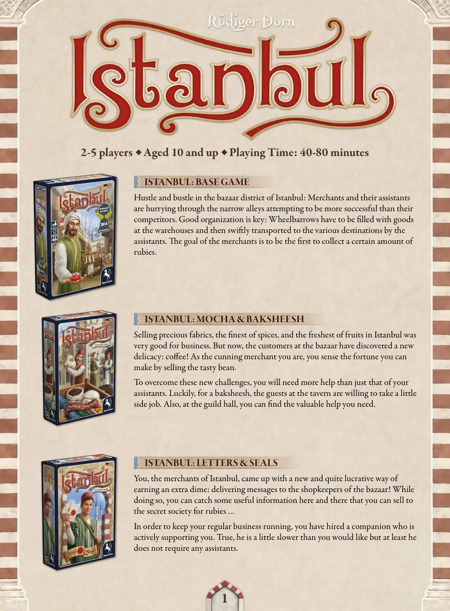
<figcaption>原版规则书 · 第 1 页（点击图片放大）</figcaption>
</figure>

<details class="mt-fold">
<summary>📝 第 1 页 AI 机翻对照（点击展开）</summary>
<div class="mt-body"><p>2-5名玩家 10岁以上 游戏时间：40-80分钟</p>

<h2>伊斯坦布尔：基础版</h2>

<p>伊斯坦布尔的巴扎区熙熙攘攘：商人和他们的助手们匆忙穿行在狭窄的小巷中，试图比竞争对手更成功。良好的组织是关键：手推车必须在仓库装满货物，然后由助手迅速运送到各个目的地。商人们的目标是第一个收集到一定数量的红宝石。</p>

<h2>伊斯坦布尔：摩卡与小费</h2>

<p>在伊斯坦布尔出售珍贵的织物、最优质的香料和最新鲜的水果对生意非常有利。但现在，巴扎的顾客们发现了一种新的美味：咖啡！作为精明的商人，你意识到通过销售这种美味的豆子可以赚到财富。</p>

<p>为了应对这些新挑战，你需要比助手更多的帮助。幸运的是，为了得到小费，酒馆的客人们愿意接一些兼职工作。此外，在公会大厅，你可以找到你需要的宝贵帮助。</p>

<h2>伊斯坦布尔：信件与印章</h2>

<p>你们，伊斯坦布尔的商人们，想出了一种新的相当赚钱的额外赚钱方式：向巴扎的店主们递送信件！在此过程中，你可以不时地捕捉到一些有用的信息，你可以将这些信息出售给秘密社会以换取红宝石……</p>

<p>为了保持你的日常生意运转，你雇佣了一位同伴，他积极支持你。确实，他比你希望的慢一些，但至少他不需要任何助手。</p></div>
</details>

<figure>
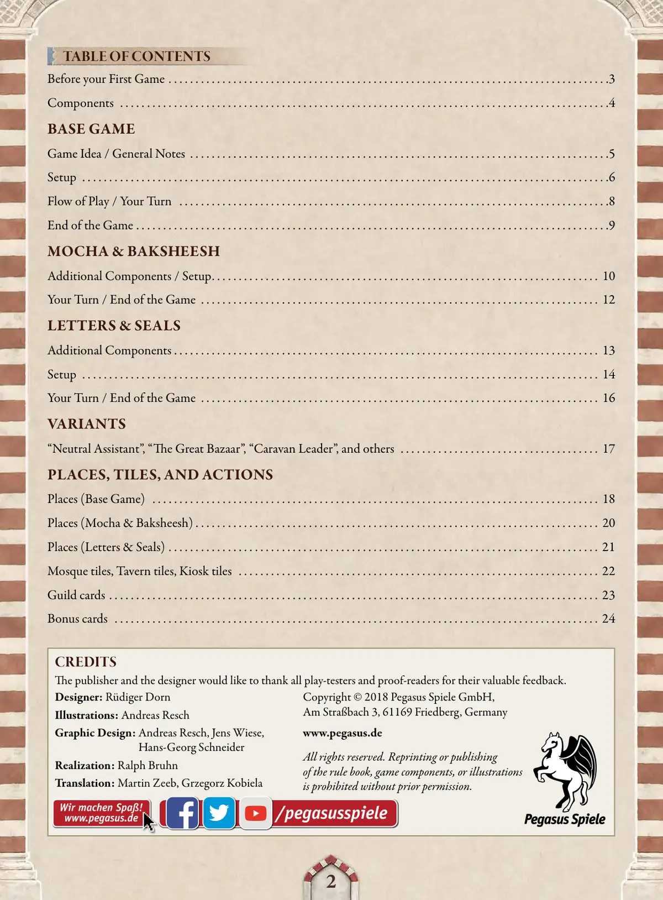
<figcaption>原版规则书 · 第 2 页（点击图片放大）</figcaption>
</figure>

<details class="mt-fold">
<summary>📝 第 2 页 AI 机翻对照（点击展开）</summary>
<div class="mt-body"><h2>目录</h2>

<p>在你第一次游戏之前 . . . . . . . . . . . . . . . . . . . . . . . . . . . . . . . . . . . . . . . . . . . . . . . . . . . . . . . . . . . . . . . . . . . . . . . . . . . . . . . . . . 3</p>

<p>组件 . . . . . . . . . . . . . . . . . . . . . . . . . . . . . . . . . . . . . . . . . . . . . . . . . . . . . . . . . . . . . . . . . . . . . . . . . . . . . . . . . . . . . . . . . . . . 4</p>

<h2>基础游戏</h2>

<p>游戏理念/通用说明 . . . . . . . . . . . . . . . . . . . . . . . . . . . . . . . . . . . . . . . . . . . . . . . . . . . . . . . . . . . . . . . . . . . . . . . . . . . . . 5</p>

<p>设置 . . . . . . . . . . . . . . . . . . . . . . . . . . . . . . . . . . . . . . . . . . . . . . . . . . . . . . . . . . . . . . . . . . . . . . . . . . . . . . . . . . . . . . . . . . . . . . . . . . 6</p>

<p>游戏流程/你的回合 . . . . . . . . . . . . . . . . . . . . . . . . . . . . . . . . . . . . . . . . . . . . . . . . . . . . . . . . . . . . . . . . . . . . . . . . . . . . . . . . . 8</p>

<p>游戏结束 . . . . . . . . . . . . . . . . . . . . . . . . . . . . . . . . . . . . . . . . . . . . . . . . . . . . . . . . . . . . . . . . . . . . . . . . . . . . . . . . . . . . . . . 9</p>

<h2>摩卡与小费</h2>

<p>额外组件/设置 . . . . . . . . . . . . . . . . . . . . . . . . . . . . . . . . . . . . . . . . . . . . . . . . . . . . . . . . . . . . . . . . . . . . . . . . 10</p>

<p>你的回合/游戏结束 . . . . . . . . . . . . . . . . . . . . . . . . . . . . . . . . . . . . . . . . . . . . . . . . . . . . . . . . . . . . . . . . . . . . . . . . . . . 12</p>

<h2>信件与印章</h2>

<p>额外组件 . . . . . . . . . . . . . . . . . . . . . . . . . . . . . . . . . . . . . . . . . . . . . . . . . . . . . . . . . . . . . . . . . . . . . . . . . . . . . . . . 13</p>

<p>设置 . . . . . . . . . . . . . . . . . . . . . . . . . . . . . . . . . . . . . . . . . . . . . . . . . . . . . . . . . . . . . . . . . . . . . . . . . . . . . . . . . . . . . . . . . . . . . . . . . 14</p>

<p>你的回合/游戏结束 . . . . . . . . . . . . . . . . . . . . . . . . . . . . . . . . . . . . . . . . . . . . . . . . . . . . . . . . . . . . . . . . . . . . . . . . . . . 16</p>

<h2>变体</h2>

<p>"中立助手"、"大集市"、"商队领袖"和其他 . . . . . . . . . . . . . . . . . . . . . . . . . . . . . . . . . . . . . . . . . . . . . . . . . . 17</p>

<h2>地点、板块与行动</h2>

<p>地点（基础游戏） . . . . . . . . . . . . . . . . . . . . . . . . . . . . . . . . . . . . . . . . . . . . . . . . . . . . . . . . . . . . . . . . . . . . . . . . . . . . . . . . . . . . 18</p>

<p>地点（摩卡与小费） . . . . . . . . . . . . . . . . . . . . . . . . . . . . . . . . . . . . . . . . . . . . . . . . . . . . . . . . . . . . . . . . . . . . . . . . . . . 20</p>

<h2>致谢</h2>

<p>出版商和设计师感谢所有测试者和校对者提供的宝贵反馈。</p>

<p>设计师：Rüdiger Dorn</p>

<p>插画：Andreas Resch</p>

<p>平面设计：Andreas Resch, Jens Wiese, Hans-Georg Schneider</p>

<p>制作：Ralph Bruhn</p>

<p>翻译：Martin Zeeb, Grzegorz Kobiela</p>

<p>版权所有 © 2018 Pegasus Spiele GmbH，</p>

<p>Am Straßbach 3, 61169 Friedberg, Germany</p>

<p>www.pegasus.de</p>

<p>保留所有权利。未经事先许可，禁止复制或出版规则书、游戏组件或插图。</p></div>
</details>

<figure>
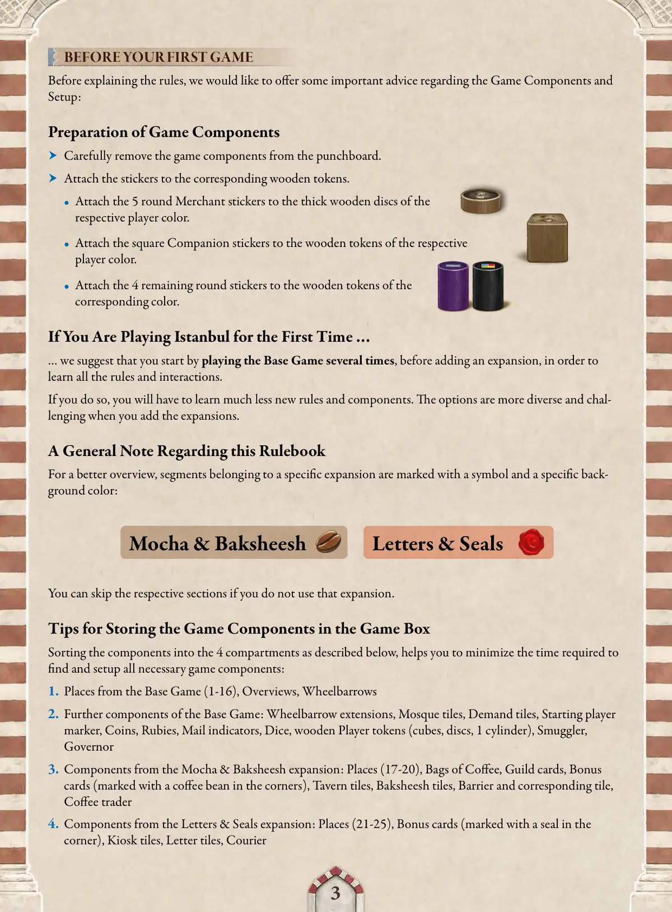
<figcaption>原版规则书 · 第 3 页（点击图片放大）</figcaption>
</figure>

<details class="mt-fold">
<summary>📝 第 3 页 AI 机翻对照（点击展开）</summary>
<div class="mt-body"><h2>在你的第一局游戏之前</h2>

<p>在解释规则之前，我们想就游戏组件和设置提供一些重要建议：</p>

<p>游戏组件准备</p>

<p> </p>

<p>小心地从纸板上取下游戏组件。</p>

<p> </p>

<p>将贴纸贴到相应的木质指示物上。</p>

<p>•	 将5个圆形商人贴纸贴到相应玩家颜色的厚木质圆盘上。</p>

<p>•	 将方形同伴贴纸贴到相应玩家颜色的木质指示物上。</p>

<p>•	 将剩余的4个圆形贴纸贴到相应颜色的木质指示物上。</p>

<p>如果你第一次玩伊斯坦布尔…</p>

<p>…我们建议你在添加扩展之前，先玩几次基础游戏，以便学习所有规则和互动。</p>

<p>如果你这样做，你将需要学习的新规则和组件会少得多。当你添加扩展时，选项会更多样化和具有挑战性。</p>

<p>关于规则手册的一般说明</p>

<p>为了更好地概览，属于特定扩展的部分会带有符号和特定的背景色进行标记：</p>

<p>Mocha &amp; Baksheesh (摩卡与小费)</p>

<p>Letters &amp; Seals (信件与印章)</p>

<p>如果你不使用该扩展，可以跳过相应章节。</p>

<p>关于游戏组件在游戏盒中存放的建议</p>

<p>按照如下描述将组件分类到4个隔间中，可以帮助你最大限度地减少查找和设置所有必要游戏组件所需的时间：</p>

<ol>
  <li></li>
</ol>

<p>基础游戏中的地点(1-16)、概览板、手推车</p>

<ol>
  <li></li>
</ol>

<p>基础游戏的额外组件：手推车扩展、清真寺板块、需求板块、起始玩家标记、金币、红宝石、邮件指示物、骰子、木质玩家指示物(立方体、圆盘、1个圆柱体)、走私者、总督</p>

<ol>
  <li></li>
</ol>

<p>Mocha &amp; Baksheesh扩展的组件：地点(17-20)、咖啡袋、公会卡、奖励卡(角落标记有咖啡豆)、酒馆板块、小费板块、障碍物及其对应板块、咖啡商人</p>

<ol>
  <li></li>
</ol>

<p>Letters &amp; Seals扩展的组件：地点(21-25)、奖励卡(角落标记有印章)、亭子板块、信件板块、信使</p></div>
</details>

<figure>
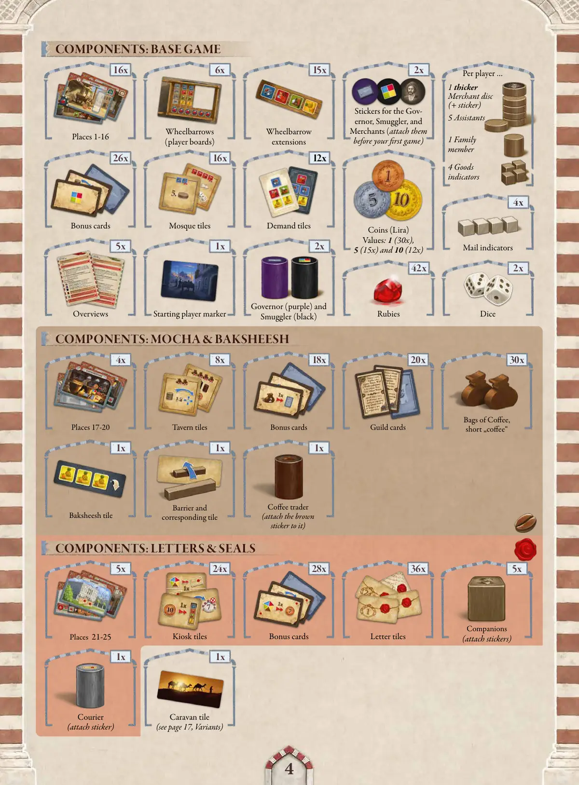
<figcaption>原版规则书 · 第 4 页（点击图片放大）</figcaption>
</figure>

<details class="mt-fold">
<summary>📝 第 4 页 AI 机翻对照（点击展开）</summary>
<div class="mt-body"><h2>组件：基础游戏</h2>

<p>地点 1-16</p>

<p>手推车</p>

<p>（玩家版图）</p>

<p>手推车</p>

<p>扩展</p>

<p>总督、走私商和商人的贴纸</p>

<p>（在第一局游戏前贴上）</p>

<p>红宝石</p>

<p>骰子</p>

<p>邮件指示物</p>

<p>硬币（里拉）</p>

<p>面值：1（30枚）、5（15枚）和10（12枚）</p>

<p>奖励卡</p>

<p>概览卡</p>

<p>总督（紫色）和走私商（黑色）</p>

<p>起始玩家标记</p>

<p>清真寺板块</p>

<p>需求板块</p>

<p>16x</p>

<p>26x</p>

<p>5x</p>

<p>1x</p>

<p>2x</p>

<p>16x</p>

<p>12x</p>

<p>15x</p>

<p>2x</p>

<p>42x</p>

<p>2x</p>

<p>6x</p>

<p>4x</p>

<p>每位玩家...</p>

<p>1个更厚的</p>

<p>商人圆盘</p>

<p>（+贴纸）</p>

<p>5个助手</p>

<p>1个家庭成员</p>

<p>4个货物指示物</p>

<h2>组件：摩卡与贿赂</h2>

<p>地点 17-20</p>

<p>屏障和</p>

<p>对应板块</p>

<p>咖啡袋，</p>

<p>简称"咖啡"</p>

<p>酒馆板块</p>

<p>奖励卡</p>

<p>咖啡商人</p>

<p>（为其贴上棕色贴纸）</p>

<p>行会卡</p>

<p>4x</p>

<p>1x</p>

<p>1x</p>

<p>30x</p>

<p>8x</p>

<p>18x</p>

<p>1x</p>

<p>20x</p>

<p>贿赂板块</p>

<p>地点  21-25</p>

<p>亭子板块</p>

<p>奖励卡</p>

<p>5x</p>

<p>1x</p>

<p>5x</p>

<p>24x</p>

<p>28x</p>

<p>36x</p>

<p>信件板块</p>

<p>同伴</p>

<p>（贴上贴纸）</p>

<p>信使</p>

<p>（贴上贴纸）</p>

<h2>组件：信件与印章</h2>

<p>1x</p>

<p>商队板块</p>

<p>（见第17页，变体规则）</p></div>
</details>

<figure>
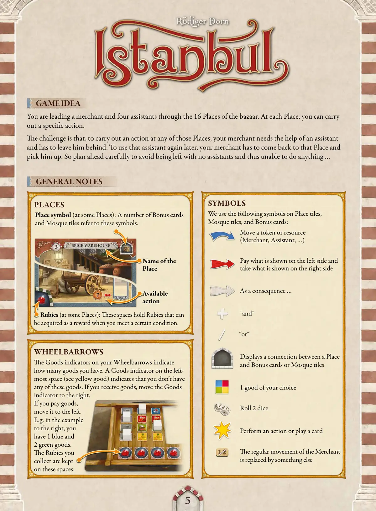
<figcaption>原版规则书 · 第 5 页（点击图片放大）</figcaption>
</figure>

<details class="mt-fold">
<summary>📝 第 5 页 AI 机翻对照（点击展开）</summary>
<div class="mt-body"><h2>游戏理念</h2>

<p>你将带领一名商人和四名助手穿越集市中的16个地点。在每个地点，你可以执行特定行动。</p>

<p>挑战在于，要在任何一个地点执行行动，你的商人需要助手的帮助，并且必须将他留下。要稍后再次使用该助手，你的商人必须回到该地点接走他。因此请仔细规划，避免没有助手而无法做任何事情...</p>

<h2>通用说明</h2>

<h2>符号</h2>

<p>我们在地点板块、清真寺板块和奖励卡上使用以下符号：</p>

<p>移动一个指示物或资源</p>

<p>（商人、助手等）</p>

<p>支付左侧所示并</p>

<p>获取右侧所示</p>

<p>因此...</p>

<p>"和"</p>

<p>"或"</p>

<p>显示一个地点与奖励卡或清真寺板块之间的连接</p>

<p>1件你选择的货物</p>

<p>掷2个骰子</p>

<p>执行行动或打出卡牌</p>

<p>商人的常规移动</p>

<p>被其他方式替代</p>

<p>红宝石（在某些地点）：这些空间持有红宝石，当你满足特定条件时可以获得作为奖励。</p>

<p>地点名称</p>

<p>可用行动</p>

<h2>地点</h2>

<p>地点符号（在某些地点）：一些奖励卡和清真寺板块会引用这些符号。</p>

<h2>手推车</h2>

<p>你手推车上的货物指示物表示你拥有多少货物。最左侧空间上的货物指示物（见黄色货物）表示你没有这些货物。如果你获得货物，将货物指示物向右移动。</p>

<p>如果你支付货物，</p>

<p>将其向左移动。</p>

<p>例如，在右侧的</p>

<p>示例中，你拥有</p>

<p>1个蓝色和</p>

<p>2个绿色货物。</p>

<p>你收集的红宝石</p>

<p>保存在这些空间中。</p></div>
</details>

<figure>
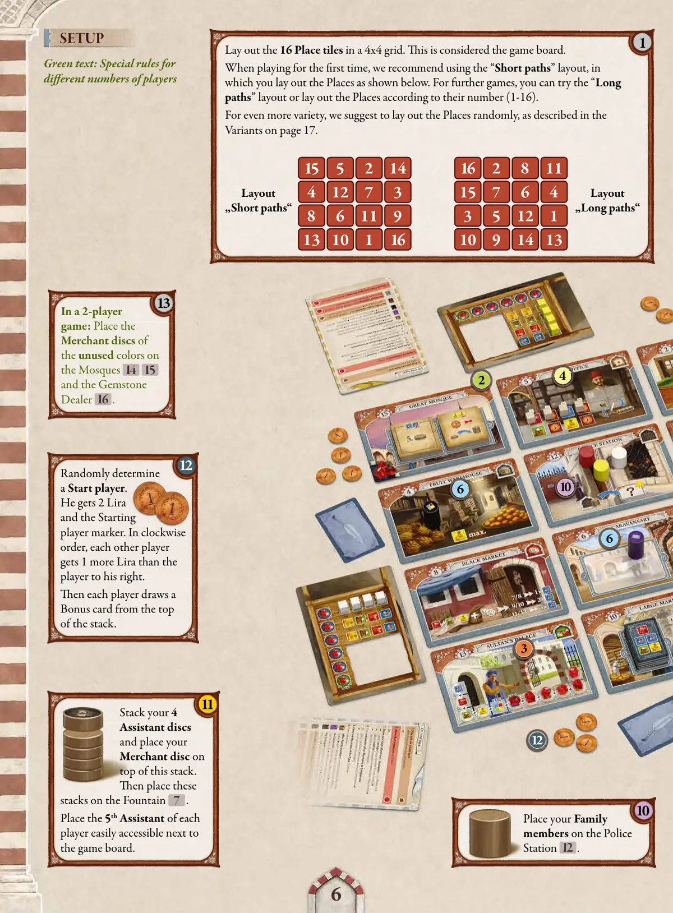
<figcaption>原版规则书 · 第 6 页（点击图片放大）</figcaption>
</figure>

<details class="mt-fold">
<summary>📝 第 6 页 AI 机翻对照（点击展开）</summary>
<div class="mt-body"><h2>设置</h2>

<p>绿色文字：不同玩家数量的特殊规则</p>

<p>将16个地点板块以4x4的网格排列。这被视为游戏版图。</p>

<p>第一次游戏时，我们建议使用"短路径"布局，按照下图排列地点。在后续游戏中，你可以尝试"长路径"布局或根据地点编号(1-16)来排列地点。</p>

<p>为了增加更多变化，我们建议按照第17页变体规则中描述的方式随机排列地点。</p>

<p>布局</p>

<p>"短路径"</p>

<p>布局</p>

<p>"长路径"</p>

<p>将你的家庭成员放在警察局12上。</p>

<p>随机决定起始玩家。他获得2里拉和起始玩家标记。按顺时针方向，其他每位玩家比其右侧玩家多获得1里拉。</p>

<p>然后每位玩家从牌堆顶部抽取一张奖励卡。</p>

<p>在2人游戏中：将未使用颜色的商人圆盘放在清真寺14、15和宝石商人16上。</p>

<p>将你的4个助手圆盘叠放在一起，并将你的商人圆盘放在这叠圆盘的顶部。然后将这些叠堆放在喷泉7上。将每位玩家的第5个助手放在游戏版图旁边，便于取用。</p></div>
</details>

<figure>
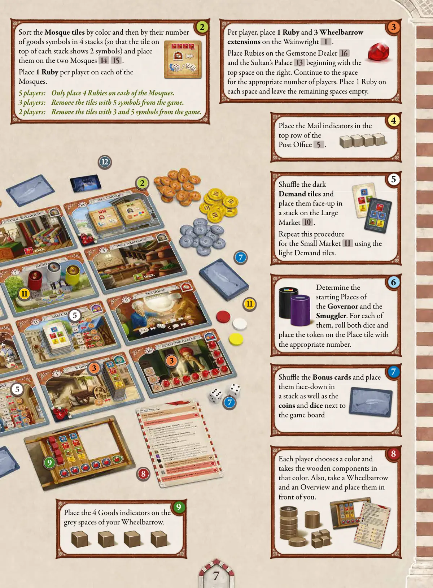
<figcaption>原版规则书 · 第 7 页（点击图片放大）</figcaption>
</figure>

<details class="mt-fold">
<summary>📝 第 7 页 AI 机翻对照（点击展开）</summary>
<div class="mt-body"><p>将邮件指示物放在邮局5的顶行。</p>

<p>洗暗色需求牌，并将它们面朝上叠放在大市场10上。使用浅色需求牌在小市场11上重复此程序。</p>

<p>确定总督和走私者的起始地点。对于每个角色，掷两个骰子，并将指示物放在相应数字的地点板块上。</p>

<p>洗混奖励牌，并将它们面朝下叠放在一起。同时将硬币和骰子放在游戏版图旁边。</p>

<p>每位玩家选择一种颜色，并拿取该颜色的木质组件。同时拿一辆手推车和一张概览卡，放在你面前。</p>

<p>将4个货物指示物放在你的手推车的灰色格子上。</p>

<p>每位玩家，在车轮匠1处放置1个红宝石和3个手推车扩展件。</p>

<p>从宝石商人16和苏丹宫13的右侧顶部空间开始，放置红宝石。继续放置到适合玩家数量的空间。在每个空间上放置1个红宝石，其余空间保持空置。</p>

<p>按颜色然后按货物符号数量对清真寺牌进行分类，分成4叠（使每叠顶部的牌显示2个符号），并将它们放在两个清真寺14、15上。</p>

<p>在每个清真寺上每位玩家放置1个红宝石。</p>

<p>5人游戏：每个清真寺只放置4个红宝石。</p>

<p>3人游戏：从游戏中移除有5个符号的牌。</p>

<p>2人游戏：从游戏中移除有3个和5个符号的牌。</p></div>
</details>

<figure>
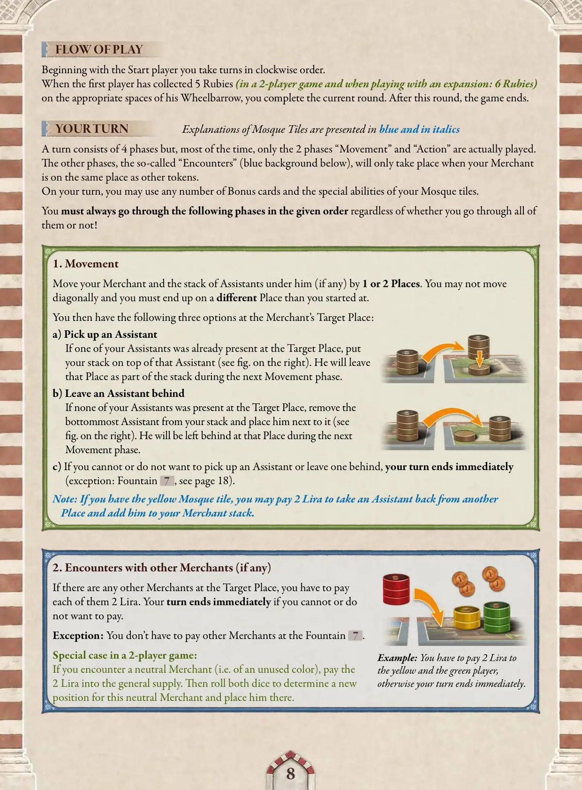
<figcaption>原版规则书 · 第 8 页（点击图片放大）</figcaption>
</figure>

<details class="mt-fold">
<summary>📝 第 8 页 AI 机翻对照（点击展开）</summary>
<div class="mt-body"><h2>游戏流程</h2>

<p>从起始玩家开始，按顺时针顺序轮流进行回合。</p>

<p>当第一位玩家在他的手推车（Wheelbarrow）的适当位置上收集了5颗红宝石（在2人游戏中以及使用扩展时：6颗红宝石）时，你完成当前轮次。此轮次结束后，游戏结束。</p>

<h2>你的回合</h2>

<p>清真寺板块（Mosque Tiles）的说明以蓝色和斜体呈现</p>

<p>一个回合包含4个阶段，但大多数时候，实际上只进行"移动"和"行动"这两个阶段。其他阶段，即所谓的"遭遇"（下方蓝色背景），只有当你的商人（Merchant）与其他指示物在同一位置时才会发生。</p>

<p>在你的回合中，你可以使用任意数量的奖励卡（Bonus cards）和你的清真寺板块的特殊能力。</p>

<p>无论你是否经历所有阶段，都必须按照给定顺序依次通过以下阶段！</p>

<h3>1. 移动</h3>

<p>将你的商人和他下面的助手堆栈（如果有）移动1或2个位置。你不能斜向移动，并且必须结束于与开始时不同的位置。</p>

<p>然后，在你的商人的目标位置，你有以下三个选项：</p>

<p>a) 捡起一个助手</p>

<p>如果你的助手已经存在于目标位置，将你的堆栈放在该助手上面（见右侧图示）。他将在下一个移动阶段作为堆栈的一部分离开该位置。</p>

<p>b) 留下一个助手</p>

<p>如果没有你的助手存在于目标位置，从你的堆栈中移除最底部的助手，并将其放在旁边（见右侧图示）。他将在下一个移动阶段被留在这个位置。</p>

<p>c) 如果你不能或不想捡起一个助手或留下一个助手，你的回合立即结束（例外：喷泉7，见第18页）。</p>

<p>注意：如果你拥有黄色清真寺板块，你可以支付2里拉（Lira）从另一个位置取回一个助手，并将他添加到你的商人堆栈中。</p>

<ol>
  <li>与其他商人的遭遇（如果有）</li>
</ol>

<p>如果目标位置有任何其他商人，你必须向每个人支付2里拉。如果你不能或不想支付，你的回合立即结束。</p>

<p>例外：你不必在喷泉7（Fountain 7）向其他商人支付。</p>

<p>2人游戏中的特殊情况：</p>

<p>如果你遇到一个中立商人（即未使用的颜色的商人），将2里拉支付到公共供应池中。然后掷两个骰子来确定这个中立商人的新位置，并将他放置在那里。</p>

<p>示例：你必须向黄色和绿色玩家各支付2里拉，否则你的回合立即结束。</p></div>
</details>

<figure>
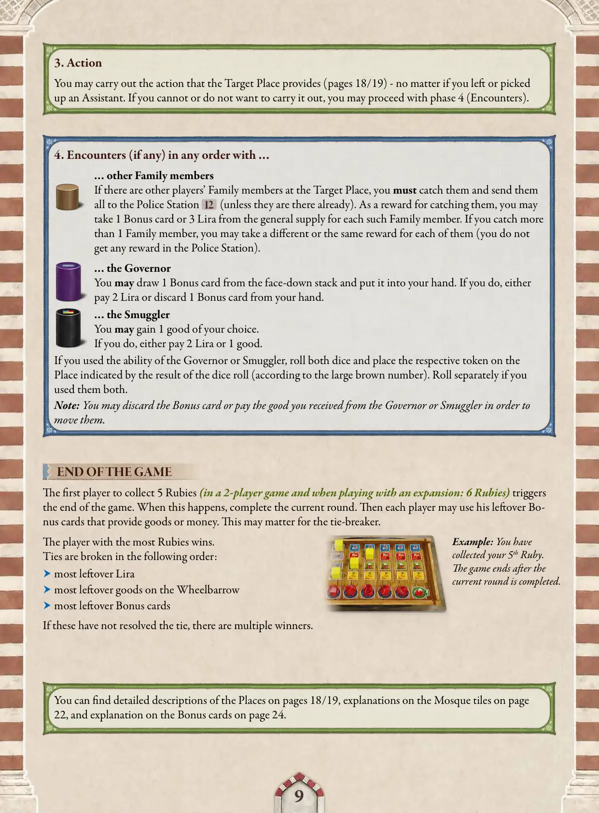
<figcaption>原版规则书 · 第 9 页（点击图片放大）</figcaption>
</figure>

<details class="mt-fold">
<summary>📝 第 9 页 AI 机翻对照（点击展开）</summary>
<div class="mt-body"><p>你可以在第18/19页找到地点的详细描述，在第22页找到清真寺板块的解释，以及在第24页找到奖励卡牌的解释。</p>

<h3>3. 行动</h3>

<p>你可以执行目标地点提供的行动（第18/19页）- 无论你是离开还是拾取了一个助手。如果你不能或不想执行它，你可以进入第4阶段（遭遇）。</p>

<ol>
  <li>遭遇（如有），可以按任意顺序与……</li>
</ol>

<p>……其他家庭成员</p>

<p>如果目标地点有其他玩家的家庭成员，你必须抓住他们并将他们全部送往警察局12（除非他们已经在那里）。作为抓住他们的奖励，你可以从公共供应区为每个这样的家庭成员拿取1张奖励卡牌或3里拉。如果你抓住超过1个家庭成员，你可以为每个人选择不同的或相同的奖励（你在警察局不会获得任何奖励）。</p>

<p>……总督</p>

<p>你可以从面朝下的牌堆中抽取1张奖励卡牌并将其放入你的手牌。如果你这样做，要么支付2里拉，要么从你的手牌中弃掉1张奖励卡牌。</p>

<p>……走私者</p>

<p>你可以获得1个你选择的好物。</p>

<p>如果你这样做，要么支付2里拉，要么支付1个好物。</p>

<p>如果你使用了总督或走私者的能力，掷两个骰子并将相应的指示物放在骰子结果指示的地点上（根据棕色大数字）。如果你同时使用了两者，则分别掷骰。</p>

<p>注意：你可以弃掉从总督或走私者那里获得的奖励卡牌或支付获得的好物，以便移动它们。</p>

<h2>游戏结束</h2>

<p>第一个收集到5颗红宝石的玩家（在2人游戏中以及使用扩展时：6颗红宝石）触发游戏结束。当这种情况发生时，完成当前回合。然后每个玩家可以使用他剩余的提供好物或金钱的奖励卡牌。这可能关系到平局决胜。</p>

<p>拥有最多红宝石的玩家获胜。</p>

<p>平局按以下顺序打破：</p>

<p> 最多剩余里拉</p>

<p> 手推车上最多剩余好物</p>

<p> 最多剩余奖励卡牌</p>

<p>如果这些仍未解决平局，则有多个获胜者。</p>

<p>示例：你已经收集了你的第5颗红宝石。</p>

<p>游戏在当前回合完成后结束。</p></div>
</details>

<figure>
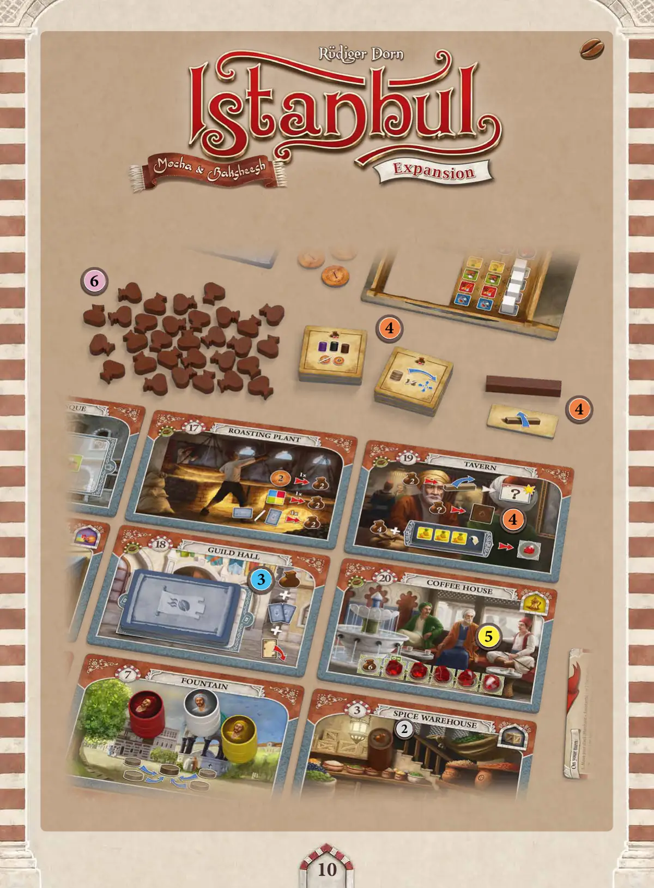
<figcaption>原版规则书 · 第 10 页（点击图片放大）</figcaption>
</figure>


<figure>
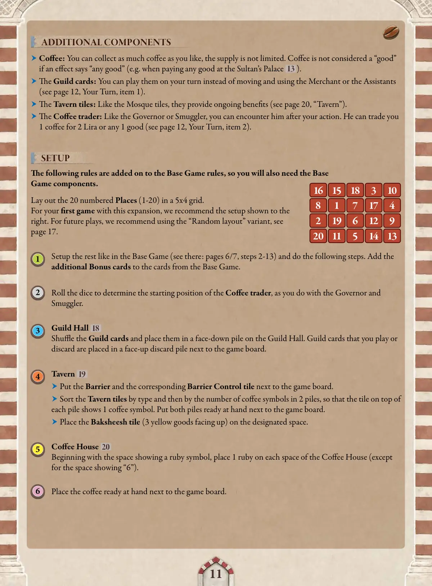
<figcaption>原版规则书 · 第 11 页（点击图片放大）</figcaption>
</figure>

<details class="mt-fold">
<summary>📝 第 11 页 AI 机翻对照（点击展开）</summary>
<div class="mt-body"><h2>额外组件</h2>

<p> 咖啡：你可以收集任意数量的咖啡，供应量没有限制。如果一个效果说"任意商品"（例如在苏丹宫殿13支付任意商品时），咖啡不被视为"商品"。</p>

<p> 行会卡牌：你可以在你的回合打出它们，而不是移动和使用商人或助手（参见第12页，你的回合，项目1）。</p>

<p> 酒馆板块：如同清真寺板块，它们提供持续收益（参见第20页，"酒馆"）。</p>

<p> 咖啡商人：如同总督或走私者，你可以在你的行动后遇到他。他可以用1咖啡兑换2里拉或任意1件商品（参见第12页，你的回合，项目2）。</p>

<h2>设置</h2>

<p>以下规则是添加到基础游戏规则中的，因此你还需要基础游戏的组件。</p>

<p>将20个编号的地点（1-20）以5x4网格排列。</p>

<p>对于你第一次使用这个扩展的游戏，我们推荐右侧所示的设置。对于未来的游戏，我们推荐使用"随机布局"变体，参见第17页。</p>

<p>1 	 像基础游戏一样设置其余部分（参见那里：第6/7页，步骤2-13），并执行以下步骤。将额外的奖励卡添加到基础游戏的卡牌中。</p>

<p>2 		 掷骰子确定咖啡商人的起始位置，就像你为总督和走私者所做的那样。</p>

<p>3 		 行会大厅 18</p>

<p>洗并行会卡牌，并将它们面朝下放在行会大厅。你打出或弃置的行会卡牌被放在游戏板旁边的一个面朝上的弃牌堆中。</p>

<p>4 		 酒馆 19</p>

<p> 将障碍物和相应的障碍物控制板块放在游戏板旁边。</p>

<p> 按类型然后按咖啡符号数量将酒馆板块分成2堆，使每堆顶部的板块显示1个咖啡符号。将两堆放在游戏板旁边随手可取的位置。</p>

<p> 将贿赂板块（3个黄色商品面朝上）放在指定的格子上。</p>

<p>5 		 咖啡馆 20</p>

<p>从显示红宝石符号的格子开始，在咖啡馆的每个格子上放置1个红宝石（显示"6"的格子除外）。</p>

<p>6 		 将咖啡放在游戏板旁边随手可取的位置。</p></div>
</details>

<figure>
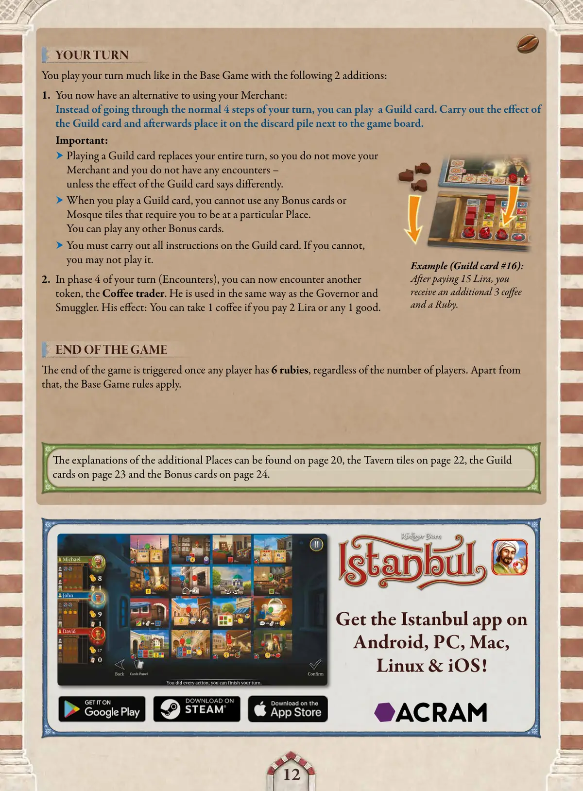
<figcaption>原版规则书 · 第 12 页（点击图片放大）</figcaption>
</figure>

<details class="mt-fold">
<summary>📝 第 12 页 AI 机翻对照（点击展开）</summary>
<div class="mt-body"><h2>你的回合</h2>

<p>你的回合进行方式与基础游戏类似，但有以下2点新增内容：</p>

<h3>1. 你现在有使用商人的替代方案：</h3>

<p>你可以不经过回合正常的4个步骤，而是打出一张行会卡牌。执行行会卡牌的效果，然后将它放在游戏板旁边的弃牌堆上。</p>

<p>重要提示：</p>

<p> 打出行会卡牌会替代你的整个回合，因此你不会移动你的商人，也不会有任何遭遇——除非行会卡牌的效果另有说明。</p>

<p> 当你打出行会卡牌时，你不能使用任何要求你位于特定地点的奖励卡牌或清真寺板块。你可以使用其他任何奖励卡牌。</p>

<p> 你必须执行行会卡牌上的所有指示。如果你无法执行，则不能打出它。</p>

<ol>
  <li>在你回合的第4阶段（遭遇）中，你现在可以遇到另一个指示物，咖啡商人。他的使用方式与总督和走私者相同。他的效果：如果你支付2里拉或任意1种商品，你可以获得1个咖啡。</li>
</ol>

<h2>游戏结束</h2>

<p>一旦有任何玩家拥有6颗红宝石，游戏就会结束，无论玩家数量如何。除此之外，基础游戏的规则适用。</p>

<p>额外地点的解释可以在第20页找到，酒馆板块在第22页，行会卡牌在第23页，奖励卡牌在第24页。</p>

<p>示例（行会卡牌#16）：</p>

<p>支付15里拉后，你</p>

<p>额外获得3个咖啡</p>

<p>和1颗红宝石。</p>

<p>获取伊斯坦布尔应用</p>

<p>适用于Android、PC、Mac、</p>

<p>Linux和iOS！</p></div>
</details>

<figure>
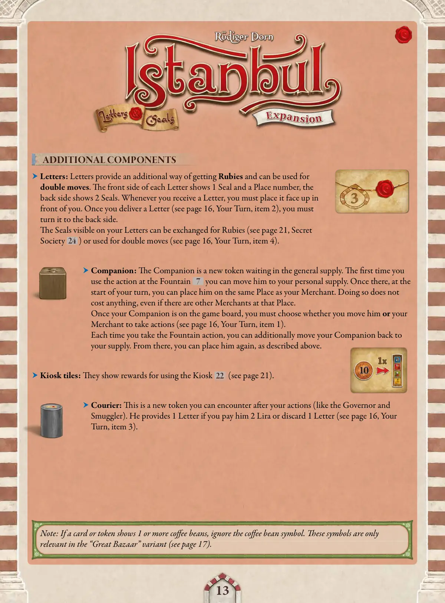
<figcaption>原版规则书 · 第 13 页（点击图片放大）</figcaption>
</figure>

<details class="mt-fold">
<summary>📝 第 13 页 AI 机翻对照（点击展开）</summary>
<div class="mt-body"><p>注意：如果一张卡牌或指示物上显示1个或更多咖啡豆图标，请忽略咖啡豆图标。这些图标仅在"大集市"变体中相关（见第17页）。</p>

<h2>额外组件</h2>

<p> 信件：信件提供了一种额外获取红宝石的方式，可用于双倍移动。每封信的正面显示1个印章和一个地点编号，背面显示2个印章。每当您收到一封信时，必须将其正面朝上放在您面前。一旦您交付了一封信（见第16页，您的回合，项目2），必须将其翻到背面。</p>

<p>您信件上可见的印章可以兑换为红宝石（见第21页，秘密社团24）或用于双倍移动（见第16页，您的回合，项目4）。</p>

<p> 伙伴：伙伴是一个在通用供应区等待的新指示物。您第一次使用喷泉7的行动时，可以将他移动到您的个人供应区。一旦在那里，在您的回合开始时，您可以将他放在与您的商人相同的地点。这样做不需要花费任何费用，即使该地点有其他商人。</p>

<p>一旦您的伙伴在游戏版图上，您必须选择移动他或您的商人来执行行动（见第16页，您的回合，项目1）。</p>

<p>每次您执行喷泉行动时，可以额外将您的伙伴移回您的供应区。从那里，您可以再次放置他，如上所述。</p>

<p> 亭子板块：它们显示使用亭子22的奖励（见第21页）。</p>

<p> 信使：这是一个您在行动后可能遇到的新指示物（如同总督和走私者）。如果您支付2里拉或弃置1封信，他会提供1封信（见第16页，您的回合，项目3）。</p></div>
</details>

<figure>
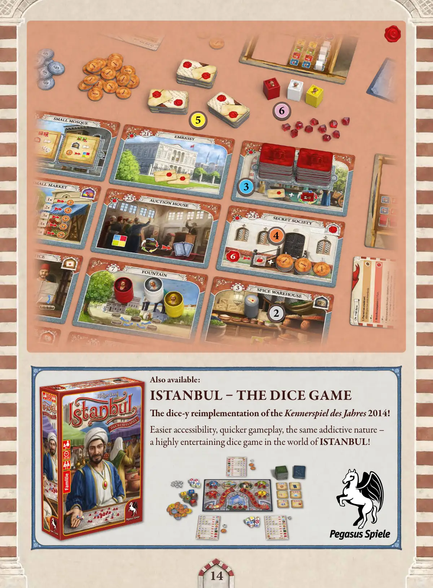
<figcaption>原版规则书 · 第 14 页（点击图片放大）</figcaption>
</figure>

<details class="mt-fold">
<summary>📝 第 14 页 AI 机翻对照（点击展开）</summary>
<div class="mt-body"><p>同样提供：</p>

<h2>伊斯坦布尔 - 骰子游戏</h2>

<p>Kennerspiel des Jahres 2014 年的骰子版重制！</p>

<p>更易上手，游戏更快，同样令人上瘾——</p>

<p>在伊斯坦布尔世界中的高度娱乐性骰子游戏！</p></div>
</details>

<figure>
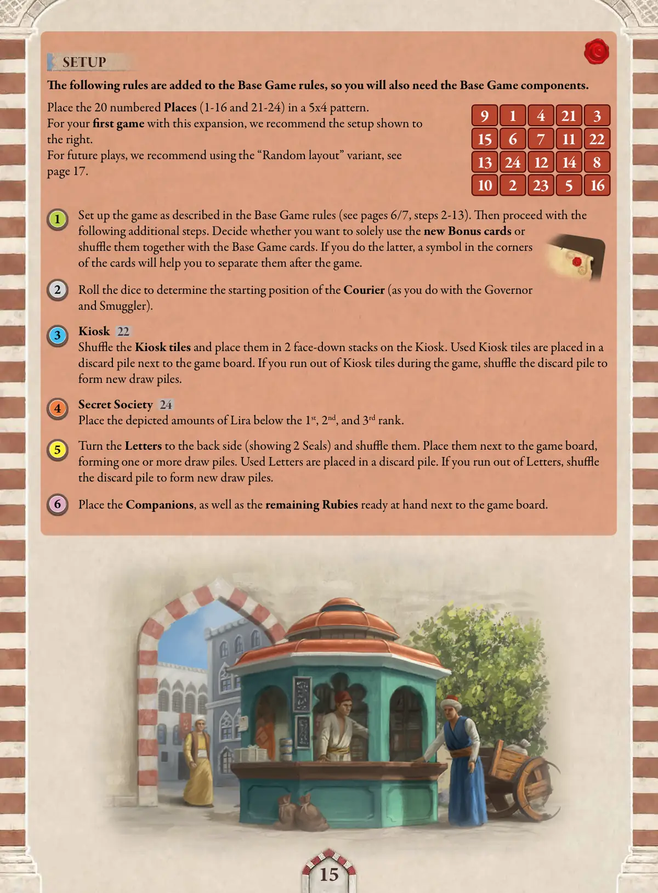
<figcaption>原版规则书 · 第 15 页（点击图片放大）</figcaption>
</figure>

<details class="mt-fold">
<summary>📝 第 15 页 AI 机翻对照（点击展开）</summary>
<div class="mt-body"><h2>设置</h2>

<p>以下规则添加到基础游戏规则中，因此您还需要基础游戏的组件。</p>

<p>将20个编号的地点（1-16和21-24）以5x4的模式摆放。</p>

<p>对于您第一次使用这个扩展，我们推荐右侧所示的设置。</p>

<p>对于未来的游戏，我们建议使用"随机布局"变体，见第17页。</p>

<p>1  按照基础游戏规则设置游戏（见第6/7页，步骤2-13）。然后继续执行以下额外步骤。决定是仅使用新的奖励卡牌，还是将它们与基础游戏卡牌洗在一起。如果您选择后者，卡牌角落的符号将帮助您在游戏后将它们分开。</p>

<p>2  掷骰子确定信使的起始位置（就像您对总督和走私者所做的那样）。</p>

<p>3  亭台  22</p>

<p>洗混亭台板块并将它们放在亭台上，形成2面朝下的牌堆。使用过的亭台板块被放在游戏板旁边的弃牌堆中。如果在游戏过程中亭台板块用完，洗混弃牌堆形成新的摸牌堆。</p>

<p>4  秘密社团  24</p>

<p>在第一、第二和第三等级下方放置如图所示数量的里拉。</p>

<p>5  将信件翻到背面（显示2个印章）并洗混。将它们放在游戏板旁边，形成一个或多个摸牌堆。使用过的信件被放在弃牌堆中。如果信件用完，洗混弃牌堆形成新的摸牌堆。</p>

<p>6  将同伴以及剩余的红宝石放在游戏板旁边，准备随时取用。</p></div>
</details>

<figure>
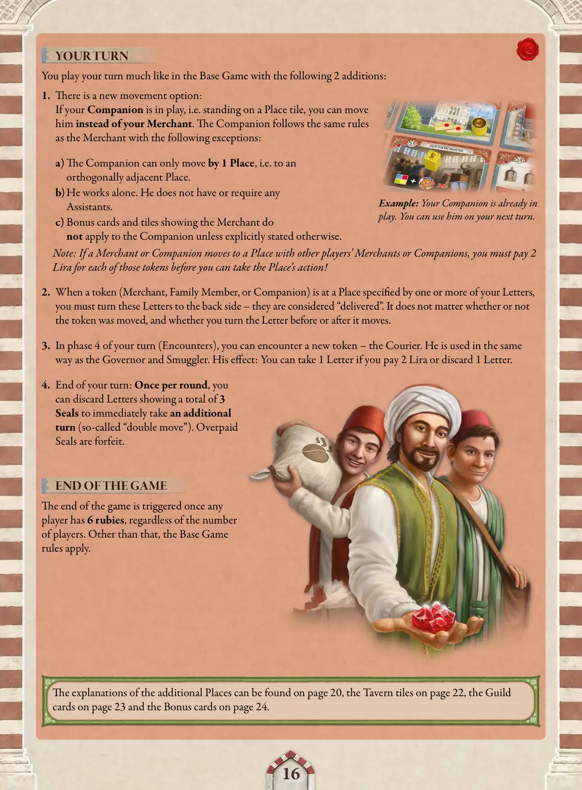
<figcaption>原版规则书 · 第 16 页（点击图片放大）</figcaption>
</figure>

<details class="mt-fold">
<summary>📝 第 16 页 AI 机翻对照（点击展开）</summary>
<div class="mt-body"><h2>你的回合</h2>

<p>你的回合进行方式与基础游戏类似，但有以下2点新增内容：</p>

<h3>1. 新的移动选项：</h3>

<p>如果你的伙伴在场，即站在一个地点板块上，你可以移动他而不是你的商人。伙伴遵循与商人相同的规则，但有以下例外：</p>

<p>a) 伙伴只能移动1个地点，即移动到正交相邻的地点。</p>

<p>b) 他独自工作。他没有也不需要任何助手。</p>

<p>c) 显示商人的奖励卡牌和板块不适用于伙伴，除非另有明确说明。</p>

<p>注意：如果商人或伙伴移动到有其他玩家商人或伙伴的地点，你必须为每个这些指示物支付2里拉，然后才能执行该地点的行动！</p>

<ol>
  <li>当一个指示物（商人、家庭成员或伙伴）位于你的一封信或多封信指定的地点时，你必须将这些信翻到背面——它们被视为"已送达"。无论指示物是否移动，以及你在移动之前或之后翻信，都没有关系。</li>
  <li>在你回合的第4阶段（遭遇），你可以遭遇一个新的指示物——信使。他的使用方式与总督和走私者相同。他的效果：如果你支付2里拉或弃掉1封信，你可以拿取1封信。</li>
</ol>

<h3>4. 回合结束：每轮一次，你可以弃掉总计显示3个印章的信，以立即获得一个额外回合（所谓的"双倍移动"）。多付的印章将被没收。</h3>

<h2>游戏结束</h2>

<p>一旦有任何玩家拥有6颗红宝石，游戏即结束，无论玩家数量如何。除此之外，基础游戏规则适用。</p>

<p>示例：你的伙伴已经在场。你可以在下一回合使用他。</p>

<p>额外地点的解释可以在第20页找到，酒馆板块在第22页，公会卡在第23页，奖励卡在第24页。</p></div>
</details>

<figure>
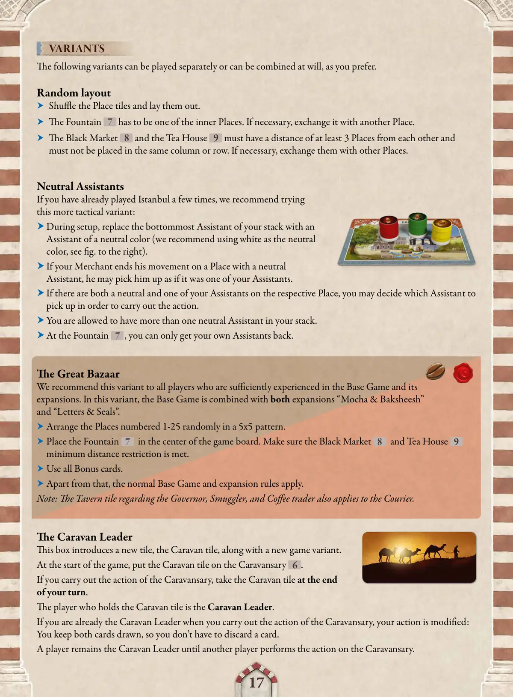
<figcaption>原版规则书 · 第 17 页（点击图片放大）</figcaption>
</figure>

<details class="mt-fold">
<summary>📝 第 17 页 AI 机翻对照（点击展开）</summary>
<div class="mt-body"><h2>变体</h2>

<p>以下变体可以单独游玩，也可以根据您的喜好随意组合。</p>

<p>随机布局</p>

<p> 洗混地点板块并铺开。</p>

<p> 喷泉7必须是内部地点之一。如有必要，与其他地点交换。</p>

<p> 黑市8和茶馆9必须相距至少3个地点，且不能放置在同一列或同一行。如有必要，与其他地点交换它们。</p>

<p>中立助手</p>

<p>如果您已经玩过伊斯坦布尔几次，我们建议尝试这个更具策略性的变体：</p>

<p></p>

<p>在设置期间，将您牌堆中最底层的助手替换为中立颜色的助手（我们建议使用白色作为中立颜色，见右侧图示）。</p>

<p></p>

<p>如果您的商人在带有中立助手的地结束移动，他可以像拾取您自己的助手一样拾取这个中立助手。</p>

<p></p>

<p>如果相应地点上同时有一个中立助手和您的一个助手，您可以决定拾取哪个助手来执行行动。</p>

<p></p>

<p>您可以在您的牌堆中拥有多个中立助手。</p>

<p></p>

<p>在喷泉7，您只能取回您自己的助手。</p>

<p>大集市</p>

<p>我们向所有对基础游戏及其扩展有足够经验的玩家推荐这个变体。在这个变体中，基础游戏与"摩卡与贿赂"和"信件与印章"两个扩展相结合。</p>

<p> 将编号1-25的地点随机排列成5x5的模式。</p>

<p> 将喷泉7放置在游戏版图中央。确保满足黑市8和茶馆9的最小距离限制。</p>

<p> 使用所有奖励卡牌。</p>

<p> 除此之外，正常的基础游戏和扩展规则适用。</p>

<p>注意：关于总督、走私贩和咖啡商人的酒馆板块同样适用于信使。</p>

<p>商队领袖</p>

<p>这个盒子引入了一个新的板块——商队板块，以及一个新的游戏变体。</p>

<p>游戏开始时，将商队板块放在商队旅馆6上。</p>

<p>如果您执行商队旅馆的行动，在您的回合结束时拿取商队板块。</p>

<p>持有商队板块的玩家是商队领袖。</p>

<p>如果您在执行商队旅馆的行动时已经是商队领袖，您的行动将被修改：</p>

<p>您可以保留两张摸到的牌，因此不必弃牌。</p>

<p>玩家保持商队领袖身份，直到另一名玩家在商队旅馆执行行动。</p></div>
</details>

<figure>
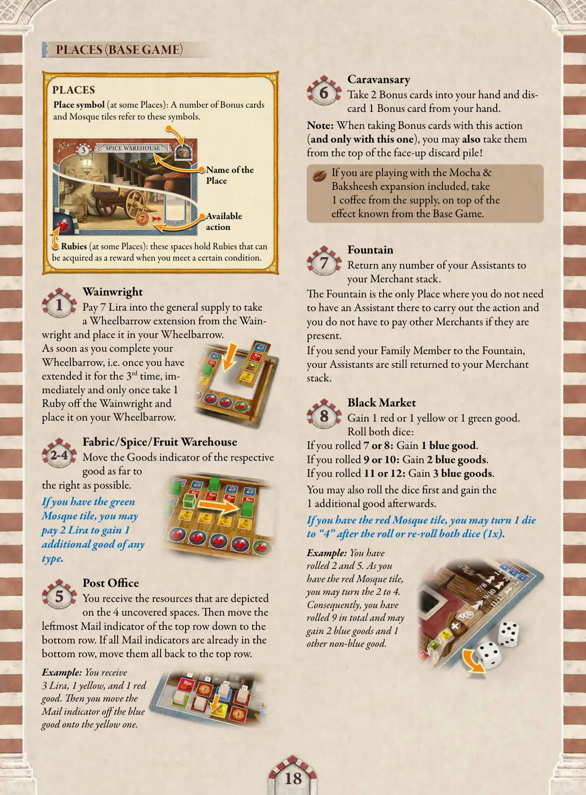
<figcaption>原版规则书 · 第 18 页（点击图片放大）</figcaption>
</figure>

<details class="mt-fold">
<summary>📝 第 18 页 AI 机翻对照（点击展开）</summary>
<div class="mt-body"><p>车匠</p>

<p>支付7里拉到公共供应区，从车匠那里拿取一个手推车扩展，并将其放置到你的手推车上。</p>

<p>一旦你完成你的手推车，即当你第三次扩展它时，立即且仅一次从车匠那里拿取1个红宝石，并将其放置到你的手推车上。</p>

<p>2-4</p>

<p>织物/香料/水果仓库</p>

<p>将相应商品的指示器尽可能向右移动。</p>

<p>如果你有绿色清真寺板块，你可以支付2里拉来获得1个额外类型的商品。</p>

<p>邮局</p>

<p>你获得4个未覆盖空间上显示的资源。然后将顶行最左边的邮件指示器移到底行。如果所有邮件指示器已经在底行，则将它们全部移回顶行。</p>

<p>示例：你获得3里拉、1个黄色商品和1个红色商品。然后将蓝色商品上的邮件指示器移到黄色商品上。</p>

<p>商队旅馆</p>

<p>拿取2张奖励卡到你的手牌，并从你的手牌中弃置1张奖励卡。</p>

<p>注意：当使用这个行动（且仅限这个行动）拿取奖励卡时，你也可以从正面朝上的弃牌堆顶部拿取它们！</p>

<p>如果你正在包含摩卡与小费扩展的游戏中，在基础游戏已知效果的基础上，再从供应区拿取1个咖啡。</p>

<p>喷泉</p>

<p>将任意数量的你的助手返回到你的商人堆。</p>

<p>喷泉是唯一不需要有助手在场来执行行动，并且即使有其他商人存在也不必支付他们的地点。</p>

<p>如果你将你的家庭成员送到喷泉，你的助手仍然会被返回到你的商人堆。</p>

<p>黑市</p>

<p>获得1个红色或1个黄色或1个绿色商品。</p>

<p>掷两个骰子：</p>

<p>如果你掷出7或8：获得1个蓝色商品。</p>

<p>如果你掷出9或10：获得2个蓝色商品。</p>

<p>如果你掷出11或12：获得3个蓝色商品。</p>

<p>你也可以先掷骰子，然后再获得1个额外商品。</p>

<p>如果你有红色清真寺板块，你可以在掷骰后将1个骰子转为"4"，或者重新掷两个骰子（1次）。</p>

<p>示例：你掷出了2和5。由于你有红色清真寺板块，你可以将2转为4。因此，你总共掷出了9，可以获得2个蓝色商品和1个其他非蓝色商品。</p>

<h2>地点（基础游戏）</h2>

<p>红宝石（在某些地点）：这些空间持有红宝石，当你满足特定条件时可以获得作为奖励。</p>

<p>地点名称</p>

<p>可用行动</p>

<h2>地点</h2>

<p>地点符号（在某些地点）：一些奖励卡和清真寺板块指的是这些符号。</p></div>
</details>

<figure>
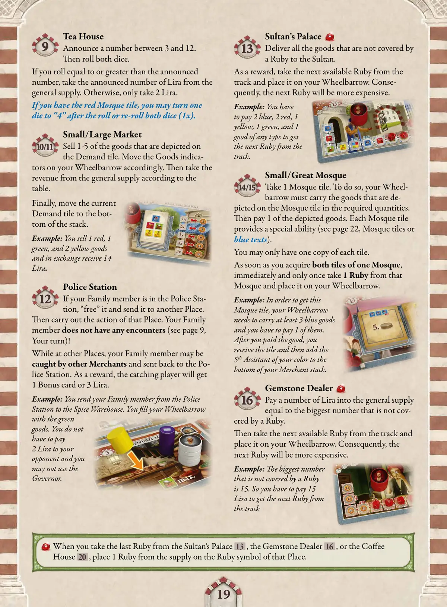
<figcaption>原版规则书 · 第 19 页（点击图片放大）</figcaption>
</figure>

<details class="mt-fold">
<summary>📝 第 19 页 AI 机翻对照（点击展开）</summary>
<div class="mt-body"><p>茶馆</p>

<p>宣布一个介于3和12之间的数字。</p>

<p>然后掷两个骰子。</p>

<p>如果掷出的点数等于或大于宣布的数字，从公共供应区拿取宣布数量的里拉。否则，只拿取2里拉。</p>

<p>如果你拥有红色清真寺板块，你可以在掷骰后将一个骰子转为"4"，或者重新掷两个骰子（限1次）。</p>

<p>10/11</p>

<p>小型/大型市场</p>

<p>出售1-5张需求板块上 depicted 的商品。相应地移动你手推车上的商品指示物。然后根据表格从公共供应区获得收入。</p>

<p>最后，将当前的需求板块移到牌堆底部。</p>

<p>示例：你出售1张红色、1张绿色和2张黄色商品，作为交换获得14里拉。</p>

<p>警察局</p>

<p>如果你的家庭成员在警察局，"释放"它并将其送到另一个地点。</p>

<p>然后执行该地点的行动。你的家庭成员不会遭遇任何事件（见第9页，你的回合）！</p>

<p>在其他地点时，你的家庭成员可能被其他商人抓住并送回警察局。作为奖励，抓住的玩家将获得1张奖励卡或3里拉。</p>

<p>示例：你将你的家庭成员从警察局送到香料仓库。你用手推车装满绿色商品。你不必向对手支付2里拉，而且你不能使用总督。</p>

<p>苏丹宫殿 *</p>

<p>将所有没有被红宝石覆盖的商品交付给苏丹。</p>

<p>作为奖励，从轨道上拿取下一个可用的红宝石并将其放在你的手推车上。因此，下一个红宝石将更贵。</p>

<p>示例：你必须支付2张蓝色、2张红色、1张黄色、1张绿色和1张任意类型的商品才能从轨道上获得下一个红宝石。</p>

<p>14/15</p>

<p>小型/伟大清真寺</p>

<p>拿取1张清真寺板块。为此，你的手推车必须携带清真寺板块上 depicted 的所需数量的商品。然后支付1张 depicted 的商品。每张清真寺板块提供一种特殊能力（见第22页，清真寺板块或蓝色文字）。</p>

<p>你每种板块只能拥有一张。</p>

<p>一旦你获得同一清真寺的两张板块，立即且仅一次从该清真寺拿取1张红宝石并将其放在你的手推车上。因此，下一个红宝石将更贵。</p>

<p>示例：为了获得这张清真寺板块，你的手推车需要携带至少3张蓝色商品，并且你必须支付其中1张。支付商品后，你获得该板块，然后将你的颜色的第5名助手添加到你的商人牌堆底部。</p>

<p>宝石商人 *</p>

<p>向公共供应区支付等于最大未被红宝石覆盖数字的里拉数量。</p>

<p>然后从轨道上拿取下一个可用的红宝石并将其放在你的手推车上。因此，下一个红宝石将更贵。</p>

<p>示例：最大未被红宝石覆盖的数字是15。因此你必须支付15里拉才能从轨道上获得下一个红宝石。</p>

<p>当你从苏丹宫(13)、宝石商人(16)或咖啡馆(20)中拿走最后一块红宝石时，从牌库中取出1块红宝石放置在该地点的红宝石标志上。</p>

<p>*</p></div>
</details>

<figure>
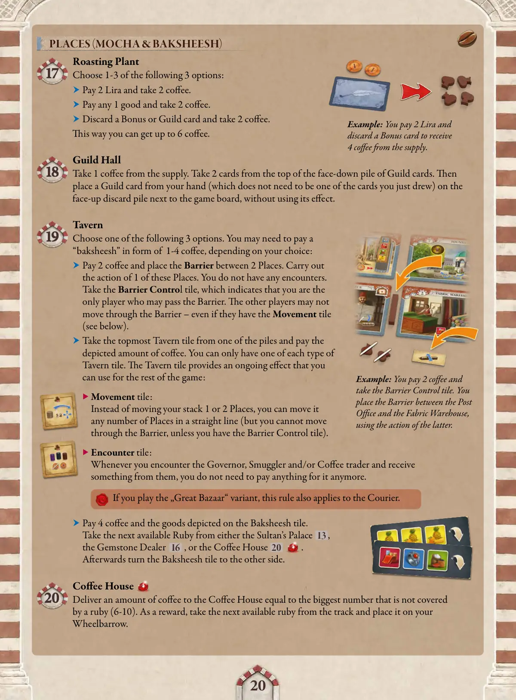
<figcaption>原版规则书 · 第 20 页（点击图片放大）</figcaption>
</figure>

<details class="mt-fold">
<summary>📝 第 20 页 AI 机翻对照（点击展开）</summary>
<div class="mt-body"><h2>地点（摩卡与小费）</h2>

<p>烘焙厂</p>

<p>从以下3个选项中选择1-3个：</p>

<p> 支付2里拉并获取2咖啡。</p>

<p> 支付任意1种货物并获取2咖啡。</p>

<p> 弃掉1张奖励或公会卡牌并获取2咖啡。</p>

<p>通过这种方式，你可以获得最多6咖啡。</p>

<p>公会大厅</p>

<p>从供应区获取1咖啡。从公会卡牌面朝下的牌堆顶抽取2张卡牌。然后将你手中的一张公会卡牌（不必是你刚抽到的卡牌之一）放置在游戏板旁边的面朝上的弃牌堆上，不使用其效果。</p>

<p>酒馆</p>

<p>从以下3个选项中选择一个。根据你的选择，你可能需要支付1-4咖啡作为"小费"：</p>

<p> 支付2咖啡并在2个地点之间放置屏障。执行其中一个地点的行动。你不会遭遇任何事件。获取屏障控制指示物，这表明你是唯一可以穿过屏障的玩家。其他玩家不能穿过屏障——即使他们有移动指示物（见下文）。</p>

<p> 从其中一个牌堆中获取最顶层的酒馆指示物，并支付图示的咖啡数量。每种类型的酒馆指示物你只能拥有一个。酒馆指示物提供持续效果，你可以在游戏的剩余时间使用：</p>

<p>f 移动指示物：</p>

<p>你可以将你的棋子栈沿直线移动任意格数（而不是1或2格），但你不能穿过屏障，除非你拥有屏障控制指示物。</p>

<p>f 遭遇指示物：</p>

<p>每当遭遇总督、走私贩和/或咖啡商人并从他们那里获得某物时，你无需再支付任何费用。</p>

<p>如果你使用"大集市"变体规则，此规则也适用于信使。</p>

<p> 支付4咖啡和图示的小费指示物上的货物。从苏丹宫 13 、宝石商人 16 或咖啡馆 20 * 中获取下一个可用的红宝石。然后将小费指示物翻到另一面。</p>

<p>咖啡馆 *</p>

<p>向咖啡馆交付数量等于未被红宝石覆盖的最大数字（6-10）的咖啡。作为奖励，从轨道上获取下一个可用的红宝石并将其放置在你的手推车上。</p>

<p>示例：你支付2里拉并弃掉1张奖励卡牌，从供应区获取4咖啡。</p>

<p>示例：你支付2咖啡并获取屏障控制指示物。你在邮局和布料仓库之间放置屏障，使用后者的行动。</p></div>
</details>

<figure>
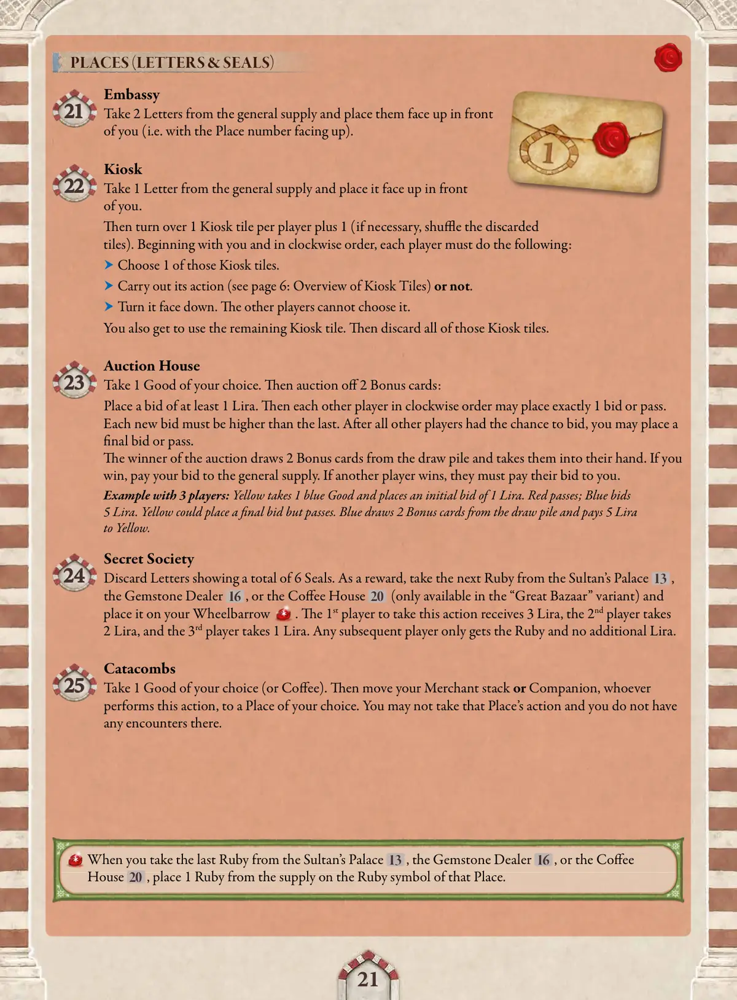
<figcaption>原版规则书 · 第 21 页（点击图片放大）</figcaption>
</figure>

<details class="mt-fold">
<summary>📝 第 21 页 AI 机翻对照（点击展开）</summary>
<div class="mt-body"><h2>地点（字母与印章）</h2>

<p>大使馆</p>

<p>从公共供应区拿取2张字母牌，正面朝上放在你面前（即地点数字朝上）。</p>

<p>亭子</p>

<p>从公共供应区拿取1张字母牌，正面朝上放在你面前。</p>

<p>然后，根据玩家数量翻转1张亭子板块（必要时，洗弃置的板块）。从你开始，按顺时针顺序，每位玩家必须执行以下操作：</p>

<p> 选择其中1张亭子板块。</p>

<p> 执行其行动（参见第6页：亭子板块概览）或不执行。</p>

<p> 将其翻面。其他玩家不能选择它。</p>

<p>你还可以使用剩余的亭子板块。然后弃置所有这些亭子板块。</p>

<p>拍卖行</p>

<p>选择1件货物。然后拍卖2张奖励卡：</p>

<p>放置至少1里拉的出价。然后每位其他玩家按顺时针顺序可以放置恰好1个出价或弃权。</p>

<p>每个新出价必须高于前一个。在所有其他玩家都有机会出价后，你可以放置最终出价或弃权。</p>

<p>拍卖赢家从牌库摸取2张奖励卡并收入手牌。如果你赢了，将你的出价支付给公共供应区。如果其他玩家赢了，他们必须将他们的出价支付给你。</p>

<p>3人玩家示例：黄色玩家拿取1件蓝色货物并放置初始出价1里拉。红色玩家弃权；蓝色玩家出价5里拉。黄色玩家可以放置最终出价但选择弃权。蓝色玩家从牌库摸取2张奖励卡并向黄色玩家支付5里拉。</p>

<p>秘密社团</p>

<p>弃置总计显示6个印章的字母牌。作为奖励，从苏丹宫13、宝石商人16或咖啡馆20（仅在"大集市"变体中可用）拿取下一颗红宝石，并将其放置在你的手推车上*。第一个执行此行动的玩家获得3里拉，第二个玩家获得2里拉，第三个玩家获得1里拉。任何后续玩家只能获得红宝石，没有额外的里拉。</p>

<p>地下墓穴</p>

<p>选择1件货物（或咖啡）。然后移动你的商人堆或同伴，无论谁执行此行动，到你选择的任意地点。你不能获取该地点的行动，也不会在那里遭遇任何事件。</p>

<p>当你从苏丹宫13、宝石商人16或咖啡馆20拿取最后一颗红宝石时，从供应区拿取1颗红宝石放置在该地点的红宝石符号上。</p>

<p>*</p></div>
</details>

<figure>
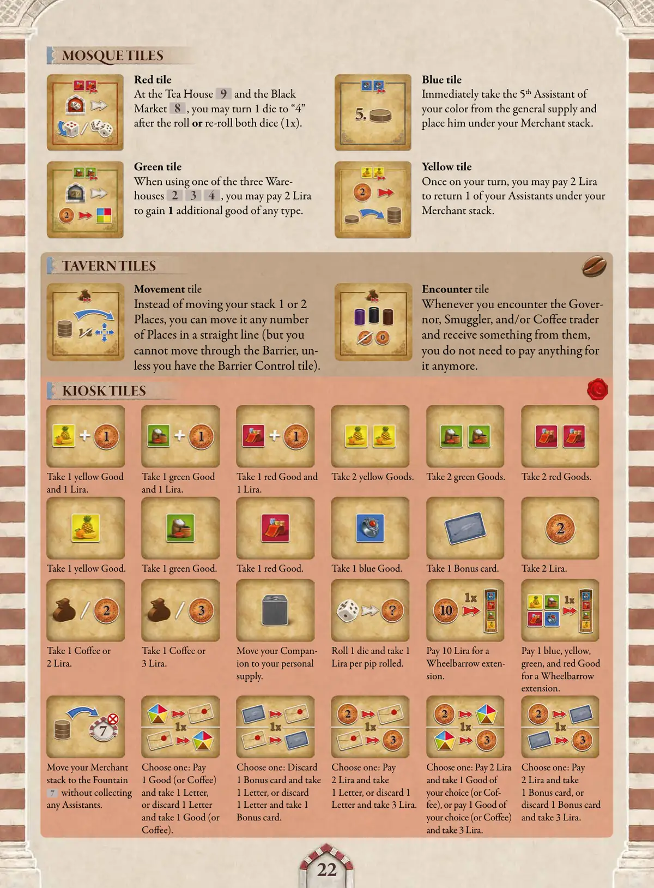
<figcaption>原版规则书 · 第 22 页（点击图片放大）</figcaption>
</figure>

<details class="mt-fold">
<summary>📝 第 22 页 AI 机翻对照（点击展开）</summary>
<div class="mt-body"><h2>酒馆板块</h2>

<p>移动板块</p>

<p>与其将你的棋子堆移动1或2个位置，你可以将其沿直线移动任意数量的位置（但你不能穿过屏障，除非你拥有屏障控制板块）。</p>

<p>遭遇板块</p>

<p>每当遇到总督、走私贩和/或咖啡商人并从他们那里获得某物时，你无需再为此支付任何费用。</p>

<h2>凉亭板块</h2>

<h2>清真寺板块</h2>

<p>红色板块</p>

<p>在茶馆9和黑市8，你可以在骰子投掷后将1个骰子转为"4"，或者重新投掷两个骰子（1次）。</p>

<p>蓝色板块</p>

<p>立即从通用供应区中拿取你颜色的第5个助手，并将其放置在你的商人堆下方。</p>

<p>绿色板块</p>

<p>当使用三个仓库2 3 4 之一时，你可以支付2里拉来获得1个额外类型的货物。</p>

<p>黄色板块</p>

<p>在你的回合中，你可以支付2里拉将1个助手放回你的商人堆下方。</p>

<p>获得1个黄色货物</p>

<p>和1里拉。</p>

<p>获得1个绿色货物</p>

<p>和1里拉。</p>

<p>获得1个红色货物</p>

<p>和1里拉。</p>

<p>获得2个黄色货物。</p>

<p>获得2个绿色货物。</p>

<p>获得2个红色货物。</p>

<p>获得1个黄色货物。</p>

<p>获得1个绿色货物。</p>

<p>获得1个红色货物。</p>

<p>获得1个蓝色货物。</p>

<p>获得1张奖励卡。</p>

<p>获得2里拉。</p>

<p>获得1个咖啡或</p>

<p>2里拉。</p>

<p>获得1个咖啡或</p>

<p>3里拉。</p>

<p>将你的同伴移动到你的个人供应区。</p>

<p>投掷1个骰子，并根据点数获得相应数量的里拉。</p>

<p>支付10里拉获得一个手推车扩展。</p>

<p>支付1个蓝色、黄色、绿色和红色货物获得一个手推车扩展。</p>

<p>将你的商人堆移动到喷泉7，但不收集任何助手。</p>

<p>选择：支付1个货物（或咖啡）并获得1封信，或者弃掉1封信并获得1个货物（或咖啡）。</p>

<p>选择：弃掉1张奖励卡并获得1封信，或者弃掉1封信并获得1张奖励卡。</p>

<p>选择：支付2里拉并获得1封信，或者弃掉1封信并获得3里拉。</p>

<p>选择：支付2里拉并获得1个你选择的货物（或咖啡），或者支付1个你选择的货物（或咖啡）并获得3里拉。</p>

<p>选择：支付2里拉并获得1张奖励卡，或者弃掉1张奖励卡并获得3里拉。</p></div>
</details>

<figure>
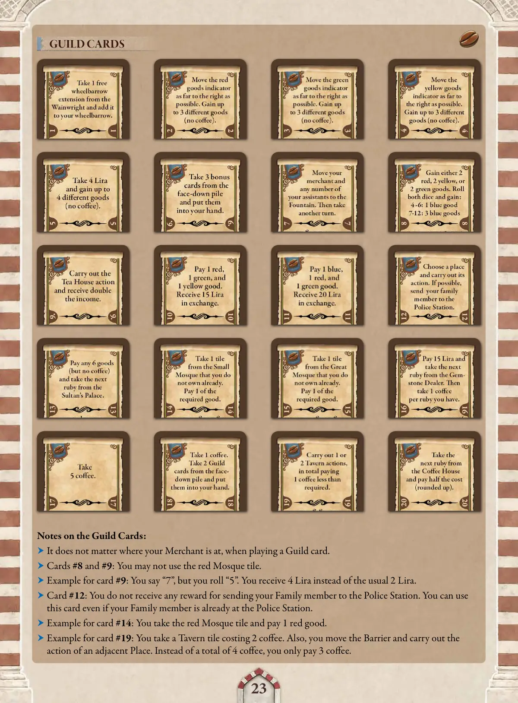
<figcaption>原版规则书 · 第 23 页（点击图片放大）</figcaption>
</figure>

<details class="mt-fold">
<summary>📝 第 23 页 AI 机翻对照（点击展开）</summary>
<div class="mt-body"><h2>行会卡</h2>

<p>行会卡说明：</p>

<p> 使用行会卡时，你的商人位于何处并不重要。</p>

<p> 卡牌#8和#9：你不能使用红色清真寺板块。</p>

<p> 卡牌#9示例：你喊"7"，但投出"5"。你获得4里拉而不是通常的2里拉。</p>

<p> 卡牌#12：将家庭成员送到警察站时，你不会获得任何奖励。即使你的家庭成员已经在警察站，你也可以使用这张卡。</p>

<p> 卡牌#14示例：你拿取红色清真寺板块并支付1个红色货物。</p>

<p> 卡牌#19示例：你拿取一张需要2个咖啡的酒馆板块。同时，你移动屏障并执行相邻位置的行动。你总共只需支付3个咖啡，而不是4个。</p></div>
</details>

<figure>
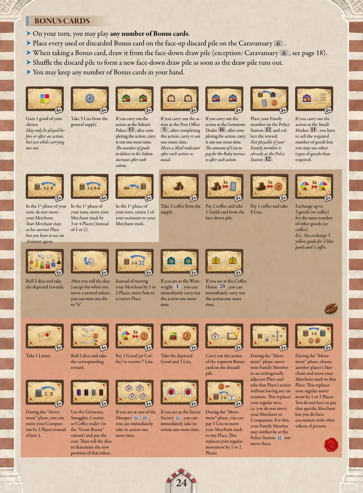
<figcaption>原版规则书 · 第 24 页（点击图片放大）</figcaption>
</figure>

<details class="mt-fold">
<summary>📝 第 24 页 AI 机翻对照（点击展开）</summary>
<div class="mt-body"><h2>奖励卡牌</h2>

<p> 在你的回合中，你可以打出任意数量的奖励卡牌。</p>

<p> 将每张使用或弃置的奖励卡牌放在商队驿站6的正面朝上的弃牌堆上。</p>

<p> 当获取一张奖励卡牌时，从正面朝下的牌库中抽取它（例外：商队驿站6，见第18页）。</p>

<p> 当牌库用尽时，将弃牌堆洗牌形成新的正面朝下的牌库。</p>

<p> 你可以在手牌中保留任意数量的奖励卡牌。</p>

<p>获得1件你选择的商品。</p>

<p>只能在行动之前或之后打出，不能在执行行动时打出。</p>

<p>从公共供应区获得5里拉。</p>

<p>如果你在苏丹宫殿13执行行动，在完成行动后，再执行一次。</p>

<p>需要交付给苏丹的商品数量在每次行动后增加。</p>

<p>如果你在邮局5执行行动，在完成行动后，再执行一次。</p>

<p>像往常一样在每次行动后移动邮差指示物。</p>

<p>如果你在宝石商人16执行行动，在完成行动后，再执行一次。</p>

<p>购买红宝石需要支付的里拉金额在每次行动后增加。</p>

<p>将你的家庭成员放在警察局12并领取奖励。</p>

<p>如果你的家庭成员已经在警察局12，则不能打出。</p>

<p>如果你在小市场11执行行动，你必须销售所需数量的商品，但你可以使用其他类型的商品而非必需的商品。</p>

<p>在你的回合的第一阶段，不要移动你的商人。</p>

<p>你的商人停留在当前位置，但你必须再次使用一名助手。</p>

<p>在你的回合的第一阶段，将你的商人栈移动3个或4个地点（而不是1个或2个）。</p>

<p>在你的回合的第一阶段，将你的1名助手归还到你的商人栈。</p>

<p>从供应区获取2咖啡。</p>

<p>支付2咖啡并从正面朝下的牌堆中获取1行会卡。</p>

<p>支付1咖啡并获取8里拉。</p>

<p>交换最多3件商品（或咖啡）为相同数量的其他商品（或咖啡）。</p>

<p>例如：你用3件黄色商品交换2件蓝色商品和1咖啡。</p>

<p>掷2个骰子并获取显示的奖励。</p>

<p>在你掷骰子后（移动中立指示物时除外），你可以将一个骰子转为"6"。</p>

<p>不是将你的商人移动1个或2个地点，而是将他移动到一个角落地点。</p>

<p>如果你在车轮匠1，你可以立即再执行一次行动。</p>

<p>如果你在咖啡馆20，你可以立即再执行一次行动。</p>

<p>获取1封信件。</p>

<p>掷2个骰子并获取相应的奖励。</p>

<p>支付1件商品（或咖啡）以获得7里拉。</p>

<p>获取显示的商品和3里拉。</p>

<p>执行弃牌堆顶部的奖励卡牌的行动。</p>

<p>在"移动"阶段，将你的家庭成员移动到一个正交相邻的地点，并执行该地点的行动而不发生任何遭遇。这取代了你的常规回合，</p>

<p>即，你不移动你的商人或同伴。为此，你的家庭成员既不能在警察局12，也不能移动到那里。</p>

<p>在"移动"阶段，选择另一个玩家的商人，并将你的商人叠放到那个地点。这取代了你常规的1或2个地点的移动。你无需支付那个特定的商人，但如果存在其他指示物，你必须与它们进行遭遇。</p>

<p>在"移动"阶段，你可以将你的同伴移动2个地点，而不是仅仅1个。</p>

<p>使用总督、走私者、信使或咖啡商人（在"大集市"变体中）并支付费用。然后掷骰子以确定该指示物的新位置。</p>

<p>如果你在清真寺14、15中的某一个，你可以立即再执行一次其行动。</p>

<p>如果你在秘密社团24，你可以立即再执行一次其行动。</p>

<p>在"移动"阶段，你可以支付3里拉，将你的商人叠放到任何地点。这取代了你常规的1或2个地点的移动。</p></div>
</details>
        </div>

        <footer class="source-note">
<p>来源：<a href="https://cdn.pegasus.de/public/media/c5/22/4d/1717757333/4250231715532_gb.pdf?ts=1752574415" target="_blank" rel="noopener">Pegasus Spiele 官网 Istanbul Big Box 产品页下载区（_gb=英文）</a>（2014 4250231715532_gb.pdf?ts=1752574415）· 译文仅供个人学习查阅，规则内容归 Pegasus Spiele 及版权方所有 · 原文版權與商标归原出版方。</p>
</footer>
      </article>
    </main>
  </div>

  <button class="to-top" aria-label="返回顶部" data-i18n-aria="backTop">↑</button>
  <script src="../assets/js/i18n.js"></script>
  <script src="../assets/js/main.js"></script>
</body>
</html>
